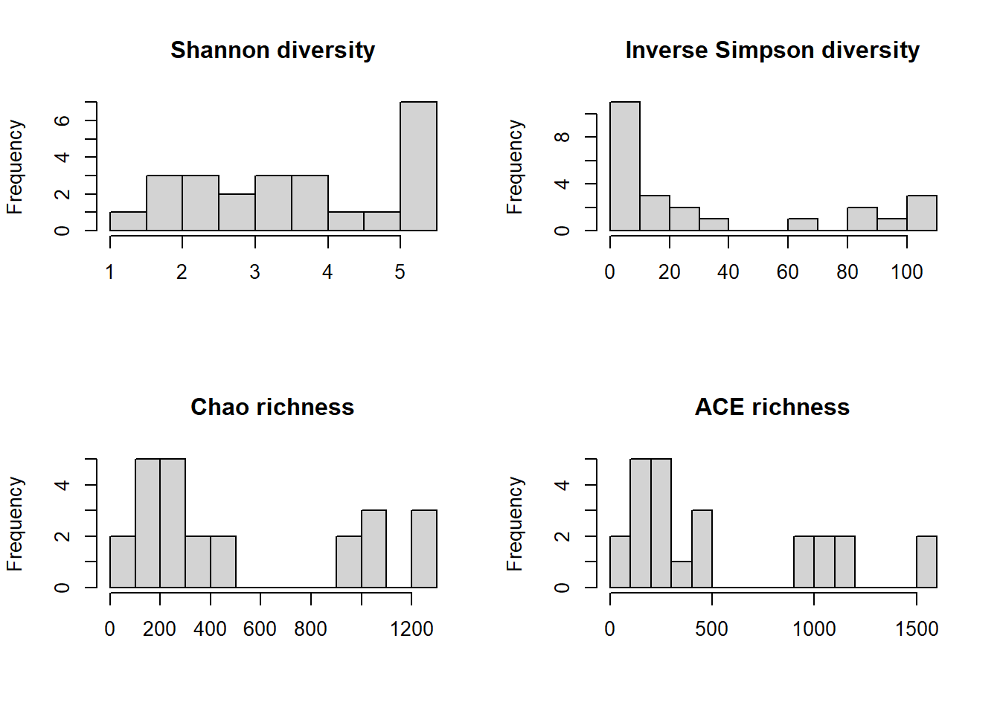
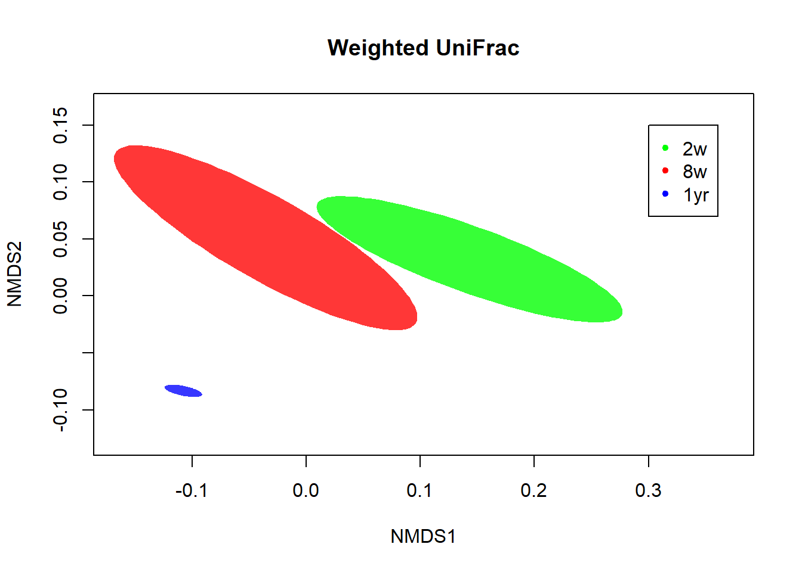

Free space
I had 32 hours to learn something new that will be useful for my internship next year and possibly my job.
I decided I wanted to gain more experience in analysing microbiota data, because I’d like to work with bacteria in my future job. So, I searched the internet for packages and such, and found a course about microbiota analysis that I decided to follow.
Link to the course: https://rstudio-pubs-static.s3.amazonaws.com/268156_d3ea37937f4f4469839ab6fa2c483842.html
Course: Microbiota analysis in R
In this course, we will be looking at the fecal bacterial microbiota of 8 calves at ages 2 weeks, 8 weeks and 1 year old and correlating them with variables such as weight gain, expressed as Average Daily Gain in Kilograms(ADGKG), and gastrointestinal short chain fatty acids, SCFA.
# install.packages("ape")
library(ape)
library(tidyverse)
library(dplyr)
library(ggplot2)
library(gplots)
library(lme4)
library(phangorn)
library(plotly)
library(tidyr)
library(here)
library(vegan)
# install.packages("VennDiagram")
library(VennDiagram)
# Installed Java from: https://www.java.com/en/download/manual.jsp
# Installed Java JDk from: https://www.oracle.com/java/technologies/downloads/#jdk18-windows
# install.packages("rJava")
library(rJava)
# install.packages("venneuler")
# library(venneuler) # R kapt er steeds mee als ik deze wil laden
# if (!require("BiocManager", quietly = TRUE))
# install.packages("BiocManager")
# BiocManager::install(version = "3.15") # Instead of source("https://bioconductor.org/biocLite.R")
# BiocManager::install("phyloseq") # Instead of biocLite("phyloseq") ?
library(phyloseq)# Downloaded the data from: https://github.com/kdillmcfarland/workshops_UW_Madison/tree/master/Microbiota_analysis_R/Data
OTU = read.table("Data/example.final.an.unique_list.0.03.norm.shared.txt",
header = TRUE,
sep = "\t")
tax = read.table("Data/example.final.an.unique_list.0.03.cons.taxonomy.txt",
header = TRUE,
sep = "\t")
meta = read.table("Data/example.metadata.txt",
header = TRUE,
row.names = 1,
sep = "\t")
SCFA = read.table("Data/example.SCFA.txt",
header = TRUE,
row.names = 1,
sep = "\t")# Setting the "Group" column as row names in the OTU dataset
row.names(OTU) = OTU$Group
# Removing the columns that are not OTU counts
OTU.clean = OTU[,-which(names(OTU) %in% c("label", "numOtus", "Group"))]
# Setting the "OTU" column as row names in the taxonomy table
row.names(tax) = tax$OTU
# Removing the OTU's that aren't present in the OTU.clean dataset
tax.clean = tax[row.names(tax) %in% colnames(OTU.clean),]
# Separating the taxonomy table so each level has its own column
tax.clean = separate(tax.clean,
Taxonomy,
into = c("Domain", "Phylum", "Class", "Order", "Family", "Genus", "Species", "Strain"),
sep = ";")
# Removing the "Size", "Strain" and "OTU" columns because these are now row names
tax.clean = tax.clean[,-which(names(tax.clean) %in% c("Size", "Strain", "OTU"))]
# Making sure the three datasets have samples in the same order
OTU.clean = OTU.clean[order(row.names(OTU.clean)),]
meta = meta[order(row.names(meta)),]
SCFA = SCFA[order(row.names(SCFA)),]
# set.seed to make the analysis reproducible
set.seed(8765)Looking at the alpha diversity
Alpha diversity is the diversity within a sample. It looks at richness, which is the amount of OTU’s in each sample, and at evenness, which is how evenly the different OTU’s are distributed within the sample.
# Creating a 2x2 plot environment so we can see all 4 metrics at once
par(mfrow = c(2,2))
# Plotting the four metrics
hist(meta$shannon,
main = "Shannon diversity",
xlab = "",
breaks = 10)
hist(meta$simpson,
main = "Simpson diversity",
xlab = "",
breaks = 10)
hist(meta$chao,
main = "Chao richness",
xlab = "",
breaks = 15)
hist(meta$ace,
main = "ACE richness",
xlab = "",
breaks = 15)
None of the data are normally distributed. Simpson diversity is very often skewed as seen in this histogram, so we’ll calculate 1/Simpson and plot the metrics again.
# Creating a 2x2 environment
par(mfrow = c(2,2))
# Plotting the four metrics again
hist(meta$shannon,
main = "Shannon diversity",
xlab = "",
breaks = 10)
hist(1/meta$simpson,
main = "Inverse Simpson diversity",
xlab = "",
breaks = 10)
hist(meta$chao,
main = "Chao richness",
xlab = "",
breaks = 15)
hist(meta$ace,
main = "ACE richness",
xlab = "",
breaks = 15)
Now the Simpson diversity is distributed similarly to the other richness metrics.
Next, we’ll test the four metrics for normal distribution.
shapiro.test(meta$shannon)##
## Shapiro-Wilk normality test
##
## data: meta$shannon
## W = 0.91511, p-value = 0.0456shapiro.test(1/meta$simpson)##
## Shapiro-Wilk normality test
##
## data: 1/meta$simpson
## W = 0.74821, p-value = 4.69e-05shapiro.test(meta$chao)##
## Shapiro-Wilk normality test
##
## data: meta$chao
## W = 0.80636, p-value = 0.0003749shapiro.test(meta$ace)##
## Shapiro-Wilk normality test
##
## data: meta$ace
## W = 0.83017, p-value = 0.0009573
None of the richness metrics are normally distributed, which was to be expected from the graphs we’ve seen. So we cannot run any tests that assume the data is normally distributed.
For illustration purposes, we’ll run the ANOVA test with the Shannon’s diversity because that’s the closest to normally distributed. We’ll look at if age impacts the Shannon diversity of the fecal microbiota.
aov.shannon.age = aov(shannon ~ AgeGroup, data = meta)
summary(aov.shannon.age)## Df Sum Sq Mean Sq F value Pr(>F)
## AgeGroup 2 42.98 21.489 103.4 1.35e-11 ***
## Residuals 21 4.36 0.208
## ---
## Signif. codes: 0 '***' 0.001 '**' 0.01 '*' 0.05 '.' 0.1 ' ' 1
We’ll run Tukey’s honest significance test to do pairwise comparisons between groups and correct for multiple comparisons.
TukeyHSD(aov.shannon.age)## Tukey multiple comparisons of means
## 95% family-wise confidence level
##
## Fit: aov(formula = shannon ~ AgeGroup, data = meta)
##
## $AgeGroup
## diff lwr upr p adj
## 2w-1yr -3.270063 -3.8446230 -2.695503 0.0e+00
## 8w-1yr -1.830903 -2.4054628 -1.256342 2.0e-07
## 8w-2w 1.439160 0.8646001 2.013720 8.5e-06
It’s clear that all age groups have significantly different diversity. In a plot, we can clearly see that diversity increases with ages.
# Re-ordering the groups
meta$AgeGroup.ord = factor(meta$AgeGroup, c("2w", "8w", "1yr"))
# Returning the plot area to 1x1
par(mfrow = c(1,1))
# Plotting the diversity
boxplot(shannon ~ AgeGroup.ord,
data = meta,
ylab = "Shannon's diversity",
xlab = "Age group") # Added the xlab myself because it looks better :)
To illustrate some non-parametric tests, we’ll use Chao’s richness estimate. Age is categorical, so we’ll use Kruskal-Wallis.
kruskal.test(chao ~ AgeGroup, data = meta)##
## Kruskal-Wallis rank sum test
##
## data: chao by AgeGroup
## Kruskal-Wallis chi-squared = 19.28, df = 2, p-value = 6.507e-05
We can also test pairwise within age groups with Wilcoxon Rank Sum Tests.
pairwise.wilcox.test(meta$chao, meta$AgeGroup, p.adjust.method = "fdr")##
## Pairwise comparisons using Wilcoxon rank sum exact test
##
## data: meta$chao and meta$AgeGroup
##
## 1yr 2w
## 2w 0.00023 -
## 8w 0.00023 0.00186
##
## P value adjustment method: fdr
Just like the diversity, richness also increases with age.
# Creating a 1x1 plot environment
par(mfrow = c(1,1))
# Plotting the richness
boxplot(chao ~ AgeGroup.ord, data = meta,
ylab = "Chao richness",
xlab = "Age group") # Again, added the xlab myself for aesthetics :)
Average Daily Gain is a continuous variable, so we’ll use a linear model to visualise it.
We’ll use Shannon’s diversity again to run some tests that are meant for normally distributed data. We’ll take a look at if the ADG impacts the Shannon diversity of the fecal microbiota.
glm.shannon.ADG = glm(shannon ~ ADGKG, data = meta)
summary(glm.shannon.ADG)##
## Call:
## glm(formula = shannon ~ ADGKG, data = meta)
##
## Deviance Residuals:
## Min 1Q Median 3Q Max
## -2.49110 -1.11216 -0.01749 1.53658 1.84728
##
## Coefficients:
## Estimate Std. Error t value Pr(>|t|)
## (Intercept) 3.62565 1.01390 3.576 0.00169 **
## ADGKG -0.03407 0.97805 -0.035 0.97253
## ---
## Signif. codes: 0 '***' 0.001 '**' 0.01 '*' 0.05 '.' 0.1 ' ' 1
##
## (Dispersion parameter for gaussian family taken to be 2.151815)
##
## Null deviance: 47.343 on 23 degrees of freedom
## Residual deviance: 47.340 on 22 degrees of freedom
## AIC: 90.412
##
## Number of Fisher Scoring iterations: 2
This shows that the intercept of our model is signficantly different from 0, bu the slope is not, and the slope is our variable of interest.
Next, let’s plot the glm.
plot(shannon ~ ADGKG, data = meta)
abline(glm.shannon.ADG)
To illustrate non-normally distributed data, we’ll use Chao’s richness estimate again. We’ll first use the Gaussian distribution, but we already know this isn’t a good fit.
gaussian.chao.adg = glm(chao ~ADGKG, data = meta, family = "gaussian")
par(mfrow = c(1,2))
plot(gaussian.chao.adg, which = c(1,2))
Next, we’ll plot the quasipoisson distribuiton.
qp.chao.ADG = glm(chao ~ ADGKG, data = meta, family = "quasipoisson")
par(mfrow = c(1,2))
plot(qp.chao.ADG, which = c(1,2))
The quasipoisson distribution fits much better than the Gaussian distribution, so we’ll use quasipoisson for further calculations.
summary(qp.chao.ADG)##
## Call:
## glm(formula = chao ~ ADGKG, family = "quasipoisson", data = meta)
##
## Deviance Residuals:
## Min 1Q Median 3Q Max
## -24.36 -17.05 -10.66 18.81 26.91
##
## Coefficients:
## Estimate Std. Error t value Pr(>|t|)
## (Intercept) 6.4528 0.5561 11.605 7.54e-11 ***
## ADGKG -0.1859 0.5438 -0.342 0.736
## ---
## Signif. codes: 0 '***' 0.001 '**' 0.01 '*' 0.05 '.' 0.1 ' ' 1
##
## (Dispersion parameter for quasipoisson family taken to be 374.2485)
##
## Null deviance: 8117.2 on 23 degrees of freedom
## Residual deviance: 8074.4 on 22 degrees of freedom
## AIC: NA
##
## Number of Fisher Scoring iterations: 5
We’ll plot Chao and ADGKG again, to look at the correlation.
par(mfrow = c(1,1))
plot(log(chao) ~ ADGKG, data = meta, ylab = "ln(Chao's richness)")
abline(qp.chao.ADG)
Looking at the graph, there is nog significant correlation between Chao’s richness and the Average Daily Gain.
To test if age and ADG impacts diversity, we’ll conduct an ANOVA test.
aov.shannon.all = aov(shannon ~ AgeGroup*ADGKG, data = meta)
summary(aov.shannon.all)## Df Sum Sq Mean Sq F value Pr(>F)
## AgeGroup 2 42.98 21.489 95.472 2.61e-10 ***
## ADGKG 1 0.05 0.054 0.239 0.631
## AgeGroup:ADGKG 2 0.26 0.130 0.576 0.572
## Residuals 18 4.05 0.225
## ---
## Signif. codes: 0 '***' 0.001 '**' 0.01 '*' 0.05 '.' 0.1 ' ' 1
We can see that the interaction between age and ADG does not significantly impact Shannon’s diversity, so we’ll remove that variable and run the test again.
aov.shannon.all2 = aov(shannon ~ AgeGroup+ADGKG, data = meta)
summary(aov.shannon.all2)## Df Sum Sq Mean Sq F value Pr(>F)
## AgeGroup 2 42.98 21.489 99.70 3.96e-11 ***
## ADGKG 1 0.05 0.054 0.25 0.623
## Residuals 20 4.31 0.216
## ---
## Signif. codes: 0 '***' 0.001 '**' 0.01 '*' 0.05 '.' 0.1 ' ' 1
This test tells us that only age impacts Shannon’s diversity significantly, but we do not know which age groups differ significantly from eachother. To test this, we can run TukeyHSD with just age.
TukeyHSD(aov.shannon.all)## Tukey multiple comparisons of means
## 95% family-wise confidence level
##
## Fit: aov(formula = shannon ~ AgeGroup * ADGKG, data = meta)
##
## $AgeGroup
## diff lwr upr p adj
## 2w-1yr -3.270063 -3.875469 -2.664657 0.00e+00
## 8w-1yr -1.830903 -2.436309 -1.225496 1.20e-06
## 8w-2w 1.439160 0.833754 2.044567 2.81e-05
With this test, however, ADGKG is ignored because it’s continuous.
We’ll run the glm instead.
glm.shannon.all = glm(shannon ~ AgeGroup*ADGKG, data = meta)
summary(glm.shannon.all)##
## Call:
## glm(formula = shannon ~ AgeGroup * ADGKG, data = meta)
##
## Deviance Residuals:
## Min 1Q Median 3Q Max
## -1.0301 -0.2468 0.0894 0.1572 0.7624
##
## Coefficients:
## Estimate Std. Error t value Pr(>|t|)
## (Intercept) 5.7123 2.5928 2.203 0.0409 *
## AgeGroup2w -3.3969 2.6197 -1.297 0.2111
## AgeGroup8w -2.9610 2.7554 -1.075 0.2967
## ADGKG -0.4481 2.7599 -0.162 0.8728
## AgeGroup2w:ADGKG 0.1228 2.7848 0.044 0.9653
## AgeGroup8w:ADGKG 1.0750 2.8763 0.374 0.7130
## ---
## Signif. codes: 0 '***' 0.001 '**' 0.01 '*' 0.05 '.' 0.1 ' ' 1
##
## (Dispersion parameter for gaussian family taken to be 0.22508)
##
## Null deviance: 47.3425 on 23 degrees of freedom
## Residual deviance: 4.0514 on 18 degrees of freedom
## AIC: 39.413
##
## Number of Fisher Scoring iterations: 2
We can see that none of the interaction terms, which are AgeGroup2w:ADGKG and AgeGroup8w:ADGKG, are significant. So we’ll remove these, by changing AgeGroup*ADGKG to AgeGroup+ADGKG, and run the glm again.
glm.shannon.all2 = glm(shannon ~ AgeGroup+ADGKG, data = meta)
summary(glm.shannon.all2)##
## Call:
## glm(formula = shannon ~ AgeGroup + ADGKG, data = meta)
##
## Deviance Residuals:
## Min 1Q Median 3Q Max
## -0.95299 -0.25858 0.07643 0.30409 0.74487
##
## Coefficients:
## Estimate Std. Error t value Pr(>|t|)
## (Intercept) 5.4459 0.3487 15.619 1.14e-12 ***
## AgeGroup2w -3.2760 0.2324 -14.094 7.55e-12 ***
## AgeGroup8w -1.7989 0.2408 -7.471 3.30e-07 ***
## ADGKG -0.1639 0.3281 -0.500 0.623
## ---
## Signif. codes: 0 '***' 0.001 '**' 0.01 '*' 0.05 '.' 0.1 ' ' 1
##
## (Dispersion parameter for gaussian family taken to be 0.2155447)
##
## Null deviance: 47.3425 on 23 degrees of freedom
## Residual deviance: 4.3109 on 20 degrees of freedom
## AIC: 36.903
##
## Number of Fisher Scoring iterations: 2
Now that we’ve removed the interaction terms, the glm model shows age as significant.
This can also be done with non-normally distributed data, like Chao’s richness.
qp.chao.all = glm(chao ~ AgeGroup*ADGKG, data = meta, family = "quasipoisson")
summary(qp.chao.all)##
## Call:
## glm(formula = chao ~ AgeGroup * ADGKG, family = "quasipoisson",
## data = meta)
##
## Deviance Residuals:
## Min 1Q Median 3Q Max
## -7.774 -3.430 -0.140 3.692 5.277
##
## Coefficients:
## Estimate Std. Error t value Pr(>|t|)
## (Intercept) 6.99825 0.71122 9.840 1.14e-08 ***
## AgeGroup2w -1.61539 0.75272 -2.146 0.0458 *
## AgeGroup8w -2.24498 0.86846 -2.585 0.0187 *
## ADGKG 0.01751 0.75699 0.023 0.9818
## AgeGroup2w:ADGKG -0.42295 0.80094 -0.528 0.6039
## AgeGroup8w:ADGKG 0.86269 0.86550 0.997 0.3321
## ---
## Signif. codes: 0 '***' 0.001 '**' 0.01 '*' 0.05 '.' 0.1 ' ' 1
##
## (Dispersion parameter for quasipoisson family taken to be 18.86331)
##
## Null deviance: 8117.2 on 23 degrees of freedom
## Residual deviance: 348.5 on 18 degrees of freedom
## AIC: NA
##
## Number of Fisher Scoring iterations: 4
Just like the Shannon’s diversity, the interaction terms are not significant, so we’ll remove those and run the glm again.
qp.chao.all2 = glm(chao ~ AgeGroup+ADGKG, data = meta, family = "quasipoisson")
summary(qp.chao.all2)##
## Call:
## glm(formula = chao ~ AgeGroup + ADGKG, family = "quasipoisson",
## data = meta)
##
## Deviance Residuals:
## Min 1Q Median 3Q Max
## -7.783 -3.452 -1.378 3.744 8.184
##
## Coefficients:
## Estimate Std. Error t value Pr(>|t|)
## (Intercept) 7.03944 0.23567 29.870 < 2e-16 ***
## AgeGroup2w -1.98090 0.14862 -13.329 2.08e-11 ***
## AgeGroup8w -1.24286 0.11926 -10.422 1.57e-09 ***
## ADGKG -0.02643 0.24530 -0.108 0.915
## ---
## Signif. codes: 0 '***' 0.001 '**' 0.01 '*' 0.05 '.' 0.1 ' ' 1
##
## (Dispersion parameter for quasipoisson family taken to be 23.74583)
##
## Null deviance: 8117.20 on 23 degrees of freedom
## Residual deviance: 476.31 on 20 degrees of freedom
## AIC: NA
##
## Number of Fisher Scoring iterations: 4
As we can see, age is now significant for richness aswell.
We sampled the same animals over time, so this is a repeated measures design. We can add this component with (1|animal) in the lmer function.
rm.shannon.all = lmer(shannon ~ AgeGroup+ADGKG + (1|Animal), data = meta)
summary(rm.shannon.all)## Linear mixed model fit by REML ['lmerMod']
## Formula: shannon ~ AgeGroup + ADGKG + (1 | Animal)
## Data: meta
##
## REML criterion at convergence: 32.4
##
## Scaled residuals:
## Min 1Q Median 3Q Max
## -1.83117 -0.45932 0.09539 0.49972 1.53368
##
## Random effects:
## Groups Name Variance Std.Dev.
## Animal (Intercept) 0.03793 0.1948
## Residual 0.17819 0.4221
## Number of obs: 24, groups: Animal, 8
##
## Fixed effects:
## Estimate Std. Error t value
## (Intercept) 5.3906 0.3520 15.313
## AgeGroup2w -3.2739 0.2114 -15.486
## AgeGroup8w -1.8104 0.2208 -8.201
## ADGKG -0.1049 0.3321 -0.316
##
## Correlation of Fixed Effects:
## (Intr) AgGrp2 AgGrp8
## AgeGroup2w -0.350
## AgeGroup8w -0.027 0.461
## ADGKG -0.884 0.057 -0.293
Very little, 0.0379, of the variance is explained by the animal random effect. This means that we don’t have to include the repeated measures in our final model, but it did need to be checked!
In conclusion on the alpha diversity: The diversity and richness of the fecal microbiota increases as the dairy cows age. Animal growth, measured by ADG, does not correlate with the diversity or richness of the fecal community.
Looking at the beta diversity
Beta diversity looks at the dissimilarity between samples, instead of within a sample, like the alpha diversity.
First, we’ll calculate the non-metric multidimensional scaling using the Bray-Curtis metric. This metric takes into account the presence or absence of OTU’s and the abundance of the OTU’s that are present in the samples. So, this metric looks at richness and diversity.
BC.nmds = metaMDS(OTU.clean, distance = "bray", k=2, trymax = 1000)## Square root transformation
## Wisconsin double standardization
## Run 0 stress 0.06208119
## Run 1 stress 0.06210577
## ... Procrustes: rmse 0.00142196 max resid 0.005448642
## ... Similar to previous best
## Run 2 stress 0.06208123
## ... Procrustes: rmse 0.0002939818 max resid 0.0006667466
## ... Similar to previous best
## Run 3 stress 0.06208111
## ... New best solution
## ... Procrustes: rmse 0.000204731 max resid 0.000465473
## ... Similar to previous best
## Run 4 stress 0.0620811
## ... New best solution
## ... Procrustes: rmse 1.986518e-05 max resid 4.33287e-05
## ... Similar to previous best
## Run 5 stress 0.06208117
## ... Procrustes: rmse 5.794984e-05 max resid 0.0001305115
## ... Similar to previous best
## Run 6 stress 0.06208113
## ... Procrustes: rmse 3.672359e-05 max resid 8.23805e-05
## ... Similar to previous best
## Run 7 stress 0.06210572
## ... Procrustes: rmse 0.001378329 max resid 0.005368037
## ... Similar to previous best
## Run 8 stress 0.06210378
## ... Procrustes: rmse 0.001413908 max resid 0.005105586
## ... Similar to previous best
## Run 9 stress 0.06208125
## ... Procrustes: rmse 0.0001224896 max resid 0.0002747291
## ... Similar to previous best
## Run 10 stress 0.06208111
## ... Procrustes: rmse 1.212188e-05 max resid 2.522293e-05
## ... Similar to previous best
## Run 11 stress 0.06208121
## ... Procrustes: rmse 0.0002127404 max resid 0.0004849115
## ... Similar to previous best
## Run 12 stress 0.06210373
## ... Procrustes: rmse 0.001425856 max resid 0.005115974
## ... Similar to previous best
## Run 13 stress 0.3701749
## Run 14 stress 0.06210382
## ... Procrustes: rmse 0.001409512 max resid 0.005096637
## ... Similar to previous best
## Run 15 stress 0.06208124
## ... Procrustes: rmse 9.356523e-05 max resid 0.0002029152
## ... Similar to previous best
## Run 16 stress 0.06210382
## ... Procrustes: rmse 0.001453464 max resid 0.005117477
## ... Similar to previous best
## Run 17 stress 0.06210562
## ... Procrustes: rmse 0.001356805 max resid 0.005299213
## ... Similar to previous best
## Run 18 stress 0.06208121
## ... Procrustes: rmse 8.948438e-05 max resid 0.0001972643
## ... Similar to previous best
## Run 19 stress 0.06208123
## ... Procrustes: rmse 0.0001043305 max resid 0.0002338428
## ... Similar to previous best
## Run 20 stress 0.06210572
## ... Procrustes: rmse 0.00138274 max resid 0.005378219
## ... Similar to previous best
## *** Solution reached
We’ve reached a convergent solution at around 20 iterations, and the stress is very low, 0.06. That means that 2 axis are sufficient to plot our data.
We’ll plot our data with different colors for each age group.
par(mfrow = c(1,1))
# Creating a blank plot for the nmds
plot(BC.nmds, type = "n", main = "Bray-Curtis")
# Adding the points
points(BC.nmds,
display = "sites",
pch = 20,
col=c("blue", "green", "red"))[meta$AgeGroup] # [Meta$AgeGroup] buiten haakjes gehaald## NULL# Adding a legend
legend(-5.5, 2.5,
legend = c("2w", "8w", "1yr"),
col=c("green", "red", "blue"),
pch = 20)
We can also calculate the nMDS for the Jaccard metric. This metric only looks at the presence or absence of OTU’s, so it only looks at richness.
J.nmds = metaMDS(OTU.clean, distance = "jaccard", k=2, trymax = 1000)## Square root transformation
## Wisconsin double standardization
## Run 0 stress 0.06208109
## Run 1 stress 0.0620812
## ... Procrustes: rmse 0.000177083 max resid 0.0003999569
## ... Similar to previous best
## Run 2 stress 0.06210582
## ... Procrustes: rmse 0.001409216 max resid 0.005429768
## ... Similar to previous best
## Run 3 stress 0.06210567
## ... Procrustes: rmse 0.00137946 max resid 0.005369397
## ... Similar to previous best
## Run 4 stress 0.06208119
## ... Procrustes: rmse 0.0001744131 max resid 0.0003942546
## ... Similar to previous best
## Run 5 stress 0.06208115
## ... Procrustes: rmse 0.000130016 max resid 0.0002909929
## ... Similar to previous best
## Run 6 stress 0.06208112
## ... Procrustes: rmse 0.0001066234 max resid 0.0002384603
## ... Similar to previous best
## Run 7 stress 0.0620811
## ... Procrustes: rmse 9.468274e-05 max resid 0.0002141725
## ... Similar to previous best
## Run 8 stress 0.0621059
## ... Procrustes: rmse 0.001426217 max resid 0.005460826
## ... Similar to previous best
## Run 9 stress 0.06208124
## ... Procrustes: rmse 0.0002015441 max resid 0.0004545264
## ... Similar to previous best
## Run 10 stress 0.0620812
## ... Procrustes: rmse 0.0001797232 max resid 0.0004060386
## ... Similar to previous best
## Run 11 stress 0.06208109
## ... New best solution
## ... Procrustes: rmse 6.139566e-05 max resid 0.0001371443
## ... Similar to previous best
## Run 12 stress 0.0621038
## ... Procrustes: rmse 0.001406932 max resid 0.005095216
## ... Similar to previous best
## Run 13 stress 0.06208126
## ... Procrustes: rmse 0.0001414878 max resid 0.0003183287
## ... Similar to previous best
## Run 14 stress 0.06208108
## ... New best solution
## ... Procrustes: rmse 3.770942e-05 max resid 7.95009e-05
## ... Similar to previous best
## Run 15 stress 0.06210568
## ... Procrustes: rmse 0.001379045 max resid 0.005369661
## ... Similar to previous best
## Run 16 stress 0.06208111
## ... Procrustes: rmse 8.244032e-05 max resid 0.0001835168
## ... Similar to previous best
## Run 17 stress 0.06208123
## ... Procrustes: rmse 0.0001586643 max resid 0.0003545319
## ... Similar to previous best
## Run 18 stress 0.06208122
## ... Procrustes: rmse 0.0001644494 max resid 0.0003672165
## ... Similar to previous best
## Run 19 stress 0.06208112
## ... Procrustes: rmse 7.816312e-05 max resid 0.0001743423
## ... Similar to previous best
## Run 20 stress 0.0620811
## ... Procrustes: rmse 7.313823e-05 max resid 0.0001625506
## ... Similar to previous best
## *** Solution reached
With this metric, we’ve also reached a convergent solution after 20 iterations. The stress is also very low for this metric, 0.06. So, we’ll plot this metric with 2 axis aswell.
plot(J.nmds,
type = "n",
main = "Jaccard")
points(J.nmds,
display = "sites",
pch = 20,
col=c("blue", "green", "red"))[meta$AgeGroup]## NULLlegend(-3, 1.5,
legend=c("2w", "8w", "1yr"),
col = c("green", "red", "blue"),
pch = 20)
The values in the plot are somewhat different, but the distributions are very similar. That’s because Jaccard = 2xBray-Curtis/(1+Bray-Curtis).
We can also plot the standard error ellipses of the nMDS data. We’ll plot the 99% confidence interval of the Bray-Curtis metric.
plot(BC.nmds,
type = "n",
main = "Bray-Curtis")
legend(-5.5, 2.5,
legend = c("2w", "8w", "1yr"),
col = c("green", "red", "blue"),
pch = 20)
# Ellipse for 2 weeks
ordiellipse(BC.nmds,
groups = meta$AgeGroup,
display = "sites",
kind = "se",
conf = 0.99,
label = FALSE,
col = "green",
draw = "polygon",
alpha = 200,
show.groups = c("2w"),
border = FALSE)
# Ellipse for 8 weeks
ordiellipse(BC.nmds,
groups = meta$AgeGroup,
display = "sites",
kind = "se",
conf = 0.99,
label = FALSE,
col = "red",
draw = "polygon",
alpha = 200,
show.groups = c("8w"),
border = FALSE)
# ELLipse for 1 year
ordiellipse(BC.nmds,
groups = meta$AgeGroup,
display = "sites",
kind = "se",
conf = 0.99,
label = FALSE,
col = "blue",
draw = "polygon",
alpha = 200,
show.groups = c("1yr"),
border = FALSE)
If the stress is high, over 0.3, it’s better to increase to 3 axes.
We’ll first calculate the Bray-Curtis nMDS for a 3-axis plot.
BC.nmds.3D = metaMDS(OTU.clean, distance = "bray", k=3, trymax=1000)## Square root transformation
## Wisconsin double standardization
## Run 0 stress 0.04686211
## Run 1 stress 0.04741561
## Run 2 stress 0.04673316
## ... New best solution
## ... Procrustes: rmse 0.01078619 max resid 0.03453509
## Run 3 stress 0.05061342
## Run 4 stress 0.04740116
## Run 5 stress 0.04984351
## Run 6 stress 0.04747471
## Run 7 stress 0.05226505
## Run 8 stress 0.0529536
## Run 9 stress 0.04741183
## Run 10 stress 0.04575764
## ... New best solution
## ... Procrustes: rmse 0.03871705 max resid 0.1297458
## Run 11 stress 0.05084344
## Run 12 stress 0.04719045
## Run 13 stress 0.04864532
## Run 14 stress 0.04750072
## Run 15 stress 0.04793837
## Run 16 stress 0.04579474
## ... Procrustes: rmse 0.004492898 max resid 0.01438546
## Run 17 stress 0.05069325
## Run 18 stress 0.04857979
## Run 19 stress 0.05058111
## Run 20 stress 0.04859455
## Run 21 stress 0.04996549
## Run 22 stress 0.04739851
## Run 23 stress 0.04747497
## Run 24 stress 0.04675354
## Run 25 stress 0.04747484
## Run 26 stress 0.04861683
## Run 27 stress 0.04575768
## ... Procrustes: rmse 0.0001087933 max resid 0.0001902161
## ... Similar to previous best
## *** Solution reached
We’ll extract the x, y and z for the nMDS, and then plot them.
BCxyz = scores(BC.nmds.3D, display = "sites")
BCxyz## NMDS1 NMDS2 NMDS3
## 5017.1yr.F -4.7877193 0.32878559 -0.204579523
## 5017.2w.F 3.1847627 0.05697846 1.484325743
## 5017.8w.F 1.0503489 -2.11932201 -1.217100783
## 5020.1yr.F -4.7466509 0.24479143 -0.001927473
## 5020.2w.F 3.4956397 -1.01621364 1.008439783
## 5020.8w.F 1.5785763 -1.92688899 0.465285369
## 5026.1yr.F -4.7617021 0.20961333 0.209854984
## 5026.2w.F 3.3964195 1.09611959 -0.615338225
## 5026.8w.F 3.1475032 2.07012741 1.477070476
## 5031.1yr.F -4.7920071 0.44153808 0.196685523
## 5031.2w.F 3.3507672 0.48092133 -1.491382237
## 5031.8w.F 0.8516766 -1.63544389 0.254264412
## 5037.1yr.F -4.8418075 0.48746059 -0.004313703
## 5037.2w.F 3.6570393 0.26299035 -0.511188778
## 5037.8w.F 3.1287853 -0.82431199 -0.025514353
## 5041.1yr.F -4.7617047 0.28520072 0.060756551
## 5041.2w.F 3.1646155 2.42901236 -1.216761595
## 5041.8w.F 1.0838533 -2.57296922 -0.236134615
## 5045.1yr.F -4.7419263 0.16694129 0.005568155
## 5045.2w.F 1.5045514 3.11037881 -0.462668248
## 5045.8w.F 1.4782189 -2.16474462 -0.450092185
## 5053.1yr.F -4.8160856 0.39888230 -0.016335985
## 5053.2w.F 3.2925437 2.29778435 0.813017161
## 5053.8w.F 0.8843018 -2.10763164 0.478069543plot_ly(x=BCxyz[,1],
y=BCxyz[,2],
z=BCxyz[,3],
type = "scatter3d",
mode = "markers",
color = meta$AgeGroup,
colors = c("blue", "green", "red"))
3D plots are difficult to interpret in articles, so many authors choose to create two 2D plots instead.
par(mfrow = c(1,2))
# Plotting axis 1 and 2, which are x and y
plot(BCxyz[,1],
BCxyz[,2],
main = "Bray-Curtis 1:2",
pch = 20,
col = c("blue", "green", "red"))[meta$AgeGroup]## NULLlegend(-5.4, 3,
legend = c("2w", "8w", "1yr"),
col = c("green", "red", "blue"),
pch = 20)
# Plotting axis 1 and 3, which are x and z
plot(BCxyz[,1],
BCxyz[,3],
main = "Bray-Curtis 1:3",
pch = 20,
col = c("blue", "green", "red"))[meta$AgeGroup]
## NULL
The most common type of beta-diversity metric is UniFrac. This metric takes phylogenetic relationships into account, as opposed to Bray-Curtis and Jaccard. So, with UniFrac, samples with different OTU’s from the same genus will be more similar than samples with OTU’s from different genera. The drawback of UniFrac is that it’s sensitive to low abundance OTU’s.
To plot UniFrac, we first have to make a phyloseq object. That means we need OTU.clean, meta and tax.clean data. After we’ve created the three separate objects, we’ll merge them into one.
OTU.UF = otu_table(as.matrix(OTU.clean), taxa_are_rows = FALSE)
tax.UF = tax_table(as.matrix(tax.clean))
meta.UF = sample_data(meta)
# Merging them into an object of class phyloseq
physeq = phyloseq(OTU.UF, tax.UF, meta.UF)
To add the phylogenetic component to UniFrac, we need a rooted phylogenetic tree of the OTU’s. In this workshop, it had already been calculated and stored in the dataset ‘NJ.tree.Rdata’. So, we’ll load this data and add it to the physeq object. Then, we’ll look at the tree and its components.
load("Data/Data_raw/NJ.tree.Rdata") # Downloaded it from GitHub and stored it in the folder "Data_raw"
physeq.tree = merge_phyloseq(physeq, NJ.tree)
physeq.tree## phyloseq-class experiment-level object
## otu_table() OTU Table: [ 5002 taxa and 24 samples ]
## sample_data() Sample Data: [ 24 samples by 9 sample variables ]
## tax_table() Taxonomy Table: [ 5002 taxa by 7 taxonomic ranks ]
## phy_tree() Phylogenetic Tree: [ 5002 tips and 5000 internal nodes ]
Next, we’ll calculate the weighted UniFrac and ordinate it into nMDS.
wUF.ordu = ordinate(physeq.tree,
method = "NMDS",
distance = "unifrac",
weighted = TRUE)## Run 0 stress 0.08645307
## Run 1 stress 0.08645305
## ... New best solution
## ... Procrustes: rmse 1.95726e-05 max resid 5.360447e-05
## ... Similar to previous best
## Run 2 stress 0.1335688
## Run 3 stress 0.1462923
## Run 4 stress 0.08645302
## ... New best solution
## ... Procrustes: rmse 0.0003084251 max resid 0.0008232998
## ... Similar to previous best
## Run 5 stress 0.08645296
## ... New best solution
## ... Procrustes: rmse 0.0002326256 max resid 0.0006198192
## ... Similar to previous best
## Run 6 stress 0.1157451
## Run 7 stress 0.1143564
## Run 8 stress 0.1317675
## Run 9 stress 0.08645297
## ... Procrustes: rmse 0.0001396108 max resid 0.0003650213
## ... Similar to previous best
## Run 10 stress 0.08808604
## Run 11 stress 0.08645293
## ... New best solution
## ... Procrustes: rmse 5.607187e-05 max resid 0.000148279
## ... Similar to previous best
## Run 12 stress 0.115745
## Run 13 stress 0.08645302
## ... Procrustes: rmse 0.0001812108 max resid 0.00048756
## ... Similar to previous best
## Run 14 stress 0.1143564
## Run 15 stress 0.08659154
## ... Procrustes: rmse 0.004236648 max resid 0.01797805
## Run 16 stress 0.1295293
## Run 17 stress 0.08645307
## ... Procrustes: rmse 0.0001978456 max resid 0.0005319125
## ... Similar to previous best
## Run 18 stress 0.1347949
## Run 19 stress 0.08645294
## ... Procrustes: rmse 1.302835e-05 max resid 3.061646e-05
## ... Similar to previous best
## Run 20 stress 0.08808611
## *** Solution reached
Let’s plot the weighted UniFrac nMDS.
par(mfrow = c(1,1))
plot(wUF.ordu,
type = "n",
main = "Weighted UniFrac")
points(wUF.ordu,
pch = 20,
display = "sites",
col = c("blue", "green", "red"))[meta$AgeGroup]## NULLlegend(0.3, 0.15,
legend = c("2w", "8w", "1yr"),
col = c("green", "red", "blue"),
pch = 20)
We can also plot it with ggplot2.
plot_ordination(physeq.tree,
wUF.ordu,
type = "sites",
color = "AgeGroup")+
scale_colour_manual(values = c("2w"="green", "8w"="red", "1yr"="blue"))+
theme_bw()+
ggtitle("Weighted UniFrac")
The Unweighted UniFrac can also be calculated and plotted.
uwUF.ordu = ordinate(physeq.tree,
method = "NMDS",
distance = "unifrac",
weighted = FALSE)## Run 0 stress 9.695153e-05
## Run 1 stress 9.657832e-05
## ... New best solution
## ... Procrustes: rmse 7.750783e-05 max resid 0.0002776914
## ... Similar to previous best
## Run 2 stress 9.871795e-05
## ... Procrustes: rmse 8.086551e-05 max resid 0.0002819207
## ... Similar to previous best
## Run 3 stress 9.488623e-05
## ... New best solution
## ... Procrustes: rmse 7.261501e-05 max resid 0.0002642816
## ... Similar to previous best
## Run 4 stress 9.862006e-05
## ... Procrustes: rmse 1.701217e-05 max resid 5.025527e-05
## ... Similar to previous best
## Run 5 stress 9.806631e-05
## ... Procrustes: rmse 0.0001070473 max resid 0.0002353732
## ... Similar to previous best
## Run 6 stress 9.757454e-05
## ... Procrustes: rmse 3.985665e-05 max resid 0.0001388531
## ... Similar to previous best
## Run 7 stress 9.826177e-05
## ... Procrustes: rmse 9.722135e-05 max resid 0.0002191936
## ... Similar to previous best
## Run 8 stress 9.695708e-05
## ... Procrustes: rmse 7.448687e-05 max resid 0.0002751687
## ... Similar to previous best
## Run 9 stress 9.907648e-05
## ... Procrustes: rmse 9.310993e-05 max resid 0.0002388289
## ... Similar to previous best
## Run 10 stress 9.984534e-05
## ... Procrustes: rmse 3.384419e-05 max resid 0.0001260377
## ... Similar to previous best
## Run 11 stress 9.684607e-05
## ... Procrustes: rmse 0.0001319037 max resid 0.0003356478
## ... Similar to previous best
## Run 12 stress 9.69891e-05
## ... Procrustes: rmse 8.404145e-06 max resid 2.447679e-05
## ... Similar to previous best
## Run 13 stress 0.0002969569
## ... Procrustes: rmse 0.0003866364 max resid 0.0006715474
## ... Similar to previous best
## Run 14 stress 9.723199e-05
## ... Procrustes: rmse 3.731826e-05 max resid 0.0001336343
## ... Similar to previous best
## Run 15 stress 9.99257e-05
## ... Procrustes: rmse 0.0001270356 max resid 0.0003614341
## ... Similar to previous best
## Run 16 stress 9.955355e-05
## ... Procrustes: rmse 6.056256e-05 max resid 0.0001673759
## ... Similar to previous best
## Run 17 stress 9.589429e-05
## ... Procrustes: rmse 1.686683e-05 max resid 4.596185e-05
## ... Similar to previous best
## Run 18 stress 9.633493e-05
## ... Procrustes: rmse 3.660483e-05 max resid 0.0001324208
## ... Similar to previous best
## Run 19 stress 9.921893e-05
## ... Procrustes: rmse 1.085938e-05 max resid 1.669484e-05
## ... Similar to previous best
## Run 20 stress 9.637055e-05
## ... Procrustes: rmse 6.450683e-05 max resid 0.0001970587
## ... Similar to previous best
## *** Solution reachedplot_ordination(physeq.tree,
uwUF.ordu,
type = "sites",
color = "AgeGroup")+
scale_colour_manual(values = c("2w" = "green", "8w" = "red", "1yr" = "blue"))+
theme_bw()+
ggtitle("Unweighted UniFrac")
We can also plot the ellipses of the Weighted UniFrac distances.
plot(wUF.ordu,
type = "n",
main = "Weighted UniFrac")
legend(0.3, 0.15,
legend = c("2w","8w","1yr"),
col = c("green", "red", "blue"),
pch = 20)
# Ellipse for 2 weeks
ordiellipse(wUF.ordu,
groups = meta$AgeGroup,
display = "sites",
kind = "se",
conf = 0.99,
label = FALSE,
col = "green",
draw = "polygon",
alpha = 200,
show.groups = c("2w"),
border = FALSE)
# Ellipse for 8 weeks
ordiellipse(wUF.ordu,
groups = meta$AgeGroup,
display = "sites",
kind = "se",
conf = 0.99,
label = FALSE,
col = "red",
draw = "polygon",
alpha = 200,
show.groups = c("8w"),
border = FALSE)
# Ellipse for 1 year
ordiellipse(wUF.ordu,
groups = meta$AgeGroup,
display = "sites",
kind = "se",
conf = 0.99,
label = FALSE,
col = "blue",
draw = "polygon",
alpha = 200,
show.groups = c("1yr"),
border = FALSE)
Ellipses can also be plotted with ggplot2, although they look a bit different.
plot_ordination(physeq.tree,
wUF.ordu,
type = "sites",
color = "AgeGroup")+
scale_colour_manual(values = c("2w" = "green", "8w" = "red", "1yr" = "blue"))+
theme_bw()+
stat_ellipse()+
ggtitle("Weighted UniFrac")
We can calculate UniFrac distances with UniFrac and ordinate it for 3-axes with metaMDS.
wUF.dist = UniFrac(physeq.tree, weighted = TRUE, normalized = TRUE)
wUF.nmds.3D = metaMDS(wUF.dist, method = "NMDS", k=3)## Run 0 stress 0.04217394
## Run 1 stress 0.05952403
## Run 2 stress 0.05952413
## Run 3 stress 0.04217396
## ... Procrustes: rmse 4.597236e-05 max resid 0.0001189685
## ... Similar to previous best
## Run 4 stress 0.04217403
## ... Procrustes: rmse 0.0001487937 max resid 0.0004561402
## ... Similar to previous best
## Run 5 stress 0.04217395
## ... Procrustes: rmse 6.845306e-05 max resid 0.0002343482
## ... Similar to previous best
## Run 6 stress 0.05952413
## Run 7 stress 0.042174
## ... Procrustes: rmse 0.0001351877 max resid 0.0004443447
## ... Similar to previous best
## Run 8 stress 0.06761596
## Run 9 stress 0.059524
## Run 10 stress 0.04217407
## ... Procrustes: rmse 0.0001709586 max resid 0.0005650254
## ... Similar to previous best
## Run 11 stress 0.04217396
## ... Procrustes: rmse 9.078681e-05 max resid 0.0003021391
## ... Similar to previous best
## Run 12 stress 0.04217405
## ... Procrustes: rmse 0.000168228 max resid 0.0005161761
## ... Similar to previous best
## Run 13 stress 0.04217398
## ... Procrustes: rmse 0.0001098377 max resid 0.0003567109
## ... Similar to previous best
## Run 14 stress 0.042174
## ... Procrustes: rmse 8.346652e-05 max resid 0.0002407597
## ... Similar to previous best
## Run 15 stress 0.04217407
## ... Procrustes: rmse 0.0001837054 max resid 0.0006272833
## ... Similar to previous best
## Run 16 stress 0.04217406
## ... Procrustes: rmse 0.0001481673 max resid 0.0003732481
## ... Similar to previous best
## Run 17 stress 0.04217395
## ... Procrustes: rmse 2.316957e-05 max resid 7.009862e-05
## ... Similar to previous best
## Run 18 stress 0.04217396
## ... Procrustes: rmse 8.182881e-05 max resid 0.0002803632
## ... Similar to previous best
## Run 19 stress 0.04217397
## ... Procrustes: rmse 0.0001031614 max resid 0.0003380335
## ... Similar to previous best
## Run 20 stress 0.04217399
## ... Procrustes: rmse 0.0001082464 max resid 0.0003554024
## ... Similar to previous best
## *** Solution reached
Then, we’ll take out the xyz values and plot them with plotly.
wUFxyz = scores(wUF.nmds.3D, display = "sites")
wUFxyz## NMDS1 NMDS2 NMDS3
## 5017.1yr.F -0.19592858 0.107838852 0.07970378
## 5017.2w.F 0.40344380 0.187070009 -0.11910580
## 5017.8w.F -0.06745447 0.045811253 -0.21943422
## 5020.1yr.F -0.21314445 0.100936809 0.06830615
## 5020.2w.F -0.02919525 -0.163696093 -0.02924315
## 5020.8w.F 0.03370365 0.054488455 -0.09105410
## 5026.1yr.F -0.22486455 0.066643683 0.05598675
## 5026.2w.F 0.13248515 -0.217106790 0.08751753
## 5026.8w.F 0.39018092 0.135420606 0.24011653
## 5031.1yr.F -0.19998566 0.080482377 0.09446961
## 5031.2w.F 0.19092361 -0.256894303 0.01561278
## 5031.8w.F -0.13588109 -0.042296559 -0.02585488
## 5037.1yr.F -0.21803783 0.076509564 0.07189351
## 5037.2w.F 0.05189732 -0.120255191 -0.04231306
## 5037.8w.F 0.14232875 -0.115637316 -0.01896293
## 5041.1yr.F -0.20914084 0.081785024 0.07442644
## 5041.2w.F 0.27828678 -0.237773303 0.03642365
## 5041.8w.F -0.13941945 -0.001654062 -0.18656492
## 5045.1yr.F -0.23334457 0.051075686 0.06283287
## 5045.2w.F 0.49235803 0.294995885 -0.14636092
## 5045.8w.F -0.16920077 -0.126231476 -0.13821994
## 5053.1yr.F -0.21544102 0.077998233 0.08008381
## 5053.2w.F 0.27521892 -0.030406547 0.17560574
## 5053.8w.F -0.13978837 -0.049104795 -0.12586523plot_ly(x=wUFxyz[,1],
y=wUFxyz[,2],
z=wUFxyz[,3],
type = "scatter3d",
mode = "markers",
color=meta$AgeGroup,
colors=c("pink", "purple", "blue"))
It is harder to visualize continuous variables in the way we’ve just visualized categorical values. We can, however, fit these as vectors on the nMDS plots.
To do that, we’ll first fit the variables to our distances. We’ll use Bray-Curtis and weighted UniFrac for this, but you can do this with Jaccard aswell and you could also use unweighted UniFrac.
fit.BC = envfit(BC.nmds, meta)
fit.BC##
## ***VECTORS
##
## NMDS1 NMDS2 r2 Pr(>r)
## AgeExact -0.99893 -0.04630 0.9765 0.001 ***
## ADGKG 0.12541 0.99210 0.0771 0.444
## chao -0.98550 0.16970 0.9598 0.001 ***
## shannon -0.69388 0.72009 0.9469 0.001 ***
## simpson 0.42089 -0.90711 0.7353 0.001 ***
## ace -0.99737 0.07248 0.9078 0.001 ***
## ---
## Signif. codes: 0 '***' 0.001 '**' 0.01 '*' 0.05 '.' 0.1 ' ' 1
## Permutation: free
## Number of permutations: 999
##
## ***FACTORS:
##
## Centroids:
## NMDS1 NMDS2
## Animalcow5017 -0.1827 0.5460
## Animalcow5020 0.0065 0.6579
## Animalcow5026 0.4231 -0.8839
## Animalcow5031 -0.2440 0.1186
## Animalcow5037 0.4943 -0.0574
## Animalcow5041 0.0501 -0.0289
## Animalcow5045 -0.1383 -0.3395
## Animalcow5053 -0.4090 -0.0129
## AgeGroup1yr -4.4483 -0.1795
## AgeGroup2w 2.5035 -1.0530
## AgeGroup8w 1.9447 1.2325
## AgeGroup.ord2w 2.5035 -1.0530
## AgeGroup.ord8w 1.9447 1.2325
## AgeGroup.ord1yr -4.4483 -0.1795
##
## Goodness of fit:
## r2 Pr(>r)
## Animal 0.0248 0.997
## AgeGroup 0.9133 0.001 ***
## AgeGroup.ord 0.9133 0.001 ***
## ---
## Signif. codes: 0 '***' 0.001 '**' 0.01 '*' 0.05 '.' 0.1 ' ' 1
## Permutation: free
## Number of permutations: 999
R has automatically fit every variable into the meta table.
If we don’t want that, we can tell envfit to only run the variables we want.
fit.BC = envfit(BC.nmds, meta[,c("AgeGroup", "ADGKG")])
fit.BC##
## ***VECTORS
##
## NMDS1 NMDS2 r2 Pr(>r)
## ADGKG 0.12541 0.99210 0.0771 0.452
## Permutation: free
## Number of permutations: 999
##
## ***FACTORS:
##
## Centroids:
## NMDS1 NMDS2
## AgeGroup1yr -4.4483 -0.1795
## AgeGroup2w 2.5035 -1.0530
## AgeGroup8w 1.9447 1.2325
##
## Goodness of fit:
## r2 Pr(>r)
## AgeGroup 0.9133 0.001 ***
## ---
## Signif. codes: 0 '***' 0.001 '**' 0.01 '*' 0.05 '.' 0.1 ' ' 1
## Permutation: free
## Number of permutations: 999
We’ll repeat this for the weighted UniFrac.
fit.wUF = envfit(wUF.ordu, meta[,c("AgeGroup", "ADGKG")])
fit.wUF##
## ***VECTORS
##
## NMDS1 NMDS2 r2 Pr(>r)
## ADGKG -0.17839 0.98396 0.0399 0.66
## Permutation: free
## Number of permutations: 999
##
## ***FACTORS:
##
## Centroids:
## NMDS1 NMDS2
## AgeGroup1yr -0.1076 -0.0833
## AgeGroup2w 0.1432 0.0322
## AgeGroup8w -0.0356 0.0512
##
## Goodness of fit:
## r2 Pr(>r)
## AgeGroup 0.5588 0.001 ***
## ---
## Signif. codes: 0 '***' 0.001 '**' 0.01 '*' 0.05 '.' 0.1 ' ' 1
## Permutation: free
## Number of permutations: 999
We can plot the 2D nMDS with an arrow for the ADG, eventho the ADG isn’t a significant variable. Thus, you wouldn’t use this figure in a publication or such. We’ll do this with the Bray-Curtis dissimilarity.
plot(BC.nmds,
type = "n",
main = "Bray-Curtis")
points(BC.nmds,
pch = 20,
display = "sites",
col = c("blue", "green", "red"))[meta$AgeGroup]## NULLlegend(-6, 2,
legend = c("2w", "8w", "1yr"),
col = c("green", "red", "blue"),
pch = 20)
plot(fit.BC, col = "black") # Adding the fitted variables
We can also only plot variables with p < 0.05. That’d mean we’d only see the centroids.
plot(BC.nmds,
type = "n",
main = "Bray-Curtis")
points(BC.nmds,
pch = 20,
display = "sites",
col = c("blue", "green", "red"))[meta$AgeGroup]## NULLlegend(-6, 2,
legend = c("2w", "8w", "1yr"),
col = c("green", "red", "blue"),
pch = 20)
plot(fit.BC, col = "black", p.max = 0.05)
We can also plot the weighted UniFrac.
plot(wUF.ordu,
type = "n",
main = "Weighted UniFrac")
points(wUF.ordu,
pch = 20,
display = "sites",
col = c("blue", "green", "red"))[meta$AgeGroup]## NULLlegend(.3, .15,
legend = c("2w", "8w", "1yr"),
col = c("green", "red", "blue"),
pch = 20)
plot(fit.wUF, col = "black")
If we fit the OTU.clean data frame to the nMDS, we can add arrows for specific OTU’s in the plot.
If an OTU arrow goes in the same direction as an age group centroid, that OTU tends to increase in abundance in that age group.
Conversely, if an OTU arrow moves in the opposite direction of an age group centroid, that OTU probably decreases in abundance in that age group.
We’ll only fit the first 10 OTU’s from our table, because it takes a long time.
Then, we’ll only plot the significant arrows.
fit.BC.OTU = envfit(BC.nmds, OTU.clean[,1:10])
fit.BC.OTU##
## ***VECTORS
##
## NMDS1 NMDS2 r2 Pr(>r)
## Otu00001 0.71703 -0.69704 0.2478 0.033 *
## Otu00002 0.46962 -0.88287 0.2108 0.057 .
## Otu00003 0.25731 -0.96633 0.2503 0.021 *
## Otu00004 0.25055 0.96810 0.2740 0.030 *
## Otu00005 0.15507 0.98790 0.2906 0.003 **
## Otu00006 -0.96828 0.24987 0.6742 0.001 ***
## Otu00007 0.18000 -0.98367 0.2487 0.009 **
## Otu00008 0.40221 0.91555 0.3108 0.016 *
## Otu00009 0.26281 -0.96485 0.1893 0.062 .
## Otu00010 0.33879 -0.94086 0.1552 0.078 .
## ---
## Signif. codes: 0 '***' 0.001 '**' 0.01 '*' 0.05 '.' 0.1 ' ' 1
## Permutation: free
## Number of permutations: 999plot(BC.nmds,
type = "n",
main = "Bray-Curtis")
points(BC.nmds,
pch = 20,
display = "sites",
col = c("blue", "green", "red"))[meta$AgeGroup]## NULLlegend(-6, -1.1,
legend = c("2w", "8w", "1yr"),
col = c("green", "red", "blue"),
pch = 20)
plot(fit.BC.OTU, col = "black", p.max = 0.05)
We can also plot summed genera or family groups of OTU’s.
# Extracting all the OTU's within the Ruminococcus genus
OTU.rumino = OTU.clean[,tax.clean$Genus == "g__Ruminococcus"]
# Summing the abundances of the OTU's into one variable/column
OTU.rumino$Rumino.sum = rowSums(OTU.rumino)
# Fitting the Ruminococceae group
fit.BC.rumino = envfit(BC.nmds, OTU.rumino$Rumino.sum)
fit.BC.rumino##
## ***VECTORS
##
## NMDS1 NMDS2 r2 Pr(>r)
## [1,] -0.14496 0.98944 0.6622 0.001 ***
## ---
## Signif. codes: 0 '***' 0.001 '**' 0.01 '*' 0.05 '.' 0.1 ' ' 1
## Permutation: free
## Number of permutations: 999# Plotting it
plot(BC.nmds,
type = "n",
main = "Bray-Curtis")
points(BC.nmds,
pch = 20,
display = "sites",
col = c("blue", "green", "red"))[meta$AgeGroup]## NULLlegend(-6, -1.1,
legend = c("2w", "8w", "1yr"),
col = c("green", "red", "blue"),
pch = 20)
# Adding the fitted variables
plot(fit.BC.rumino, col = "black", labels = c("Ruminococcus"))
We can test for significant differences between samples with the permutational analysis of variance, PERMANOVA, or analysis of similarity, ANOSIM. Both test if the overall microbial community differs by your variable of interest.
We can run these tests with Bray-Curtis, Jaccard, unweighted UniFrac and/or weighted UniFrac.
If the variable is significant for Bray-Curtis/weighted UniFrac but not for Jaccard/unweighted UniFrac, that means the groups tend to have the same OTU’s(richness), but different abundances of those OTU’s(diversity).
If the variables are significant for Bray-Curtis/Jaccard but not for unweighted/weighted UniFrac, that means the samples have different specific OTU’s but similar taxa.
For Bray-Curtis and Jaccard, we can calculate the distances and run PERMANOVA.
BC.dist = vegdist(OTU.clean, distance = "bray")
# adonis(BC.dist ~ AgeGroup*ADGKG, data = meta, permutations = 1000)J.dist = vegdist(OTU.clean, distance = "jaccard")
# adonis(J.dist ~ AgeGroup*ADGKG, data = meta, permutations = 1000)
For both Bray-Curtis and Jaccard, the interaction isn’t significant. So we’ll run PERMANOVA again, without the interaction component.
# adonis(BC.dist ~ AgeGroup+ADGKG, data = meta, permutations = 1000)# adonis(J.dist ~ AgeGroup+ADGKG, data = meta, permutations = 1000)
We’ll also calculate the distances for weighted and unweighted UniFrac and then run PERMANOVA.
wUF.dist = UniFrac(physeq.tree, weighted = TRUE, normalized = TRUE)
# adonis(wUF.dist ~ AgeGroup*ADGKG, data = meta, permutations = 1000)uwUF.dist = UniFrac(physeq.tree, weighted = FALSE, normalized = TRUE)
# adonis(uwUF.dist ~ AgeGroup*ADGKG, data = meta, permutations = 1000)
We’ll remove the non-significant interaction terms for both of these aswell.
# adonis(wUF.dist ~ AgeGroup+ADGKG, data = meta, permutations = 1000)# adonis(uwUF.dist ~ AgeGroup+ADGKG, data = meta, permutations = 1000)
If your group sizes are very different, you can use ANOSIM instead of PERMANOVA. ANOSIM does have quite some limitations; you can only test one variable, so no interaction, and it can only be used for categorical variables.
We’ll run it for Bray-Curtis to demonstrate.
anosim(BC.dist, meta$AgeGroup, permutations = 1000)##
## Call:
## anosim(x = BC.dist, grouping = meta$AgeGroup, permutations = 1000)
## Dissimilarity: bray
##
## ANOSIM statistic R: 0.8467
## Significance: 0.000999
##
## Permutation: free
## Number of permutations: 1000
The Mantel test, tests if two distance matrices co-vary. So, it tests if the data in matrix 1 changes in the same way as the data in matrix 2.
First, we’ll subset our OTU table to the samples that we also have SCFA information about.
OTU.SCFA = OTU.clean[row.names(OTU.clean) %in% paste(row.names(SCFA), ".F", sep = ""),]
Then, we’ll calculate the distances for each matrix and run the Mantel.
dist1 = vegdist(OTU.SCFA)
dist2 = vegdist(SCFA)
mantel(dist1, dist2)##
## Mantel statistic based on Pearson's product-moment correlation
##
## Call:
## mantel(xdis = dist1, ydis = dist2)
##
## Mantel statistic r: -0.02423
## Significance: 0.54167
##
## Upper quantiles of permutations (null model):
## 90% 95% 97.5% 99%
## 0.540 0.552 0.596 0.629
## Permutation: free
## Number of permutations: 23
We can see that the overall OTU table and SCFA tables do not co-vary.
Sometimes it will be clear from nMDS that one group tends to vary more than other groups. We can test this with multivariate homogeneity of group dispersion. We’ll use Bray-Curtis to demonstrate this.
First we’ll calculate the dispersion in each group. Then, we’ll perform an ANOVA-like test to determine if the variances differ by groups.
disp.age = betadisper(BC.dist, meta$AgeGroup)
permutest(disp.age, pairwise = TRUE, permutations = 1000)##
## Permutation test for homogeneity of multivariate dispersions
## Permutation: free
## Number of permutations: 1000
##
## Response: Distances
## Df Sum Sq Mean Sq F N.Perm Pr(>F)
## Groups 2 0.47459 0.237293 30.93 1000 0.000999 ***
## Residuals 21 0.16111 0.007672
## ---
## Signif. codes: 0 '***' 0.001 '**' 0.01 '*' 0.05 '.' 0.1 ' ' 1
##
## Pairwise comparisons:
## (Observed p-value below diagonal, permuted p-value above diagonal)
## 1yr 2w 8w
## 1yr 9.9900e-04 0.0010
## 2w 4.8556e-06 0.7602
## 8w 1.2886e-06 7.7206e-01
If we also look at the Bray-Curtis plot we made earlier, we can conclude that 2 and 8 week old calves have a similar variability in their fecal microbiota. They also have more variable fecal microbiotas than 1 year old heifers.
OTU’s that differ by
The SIMPER function gives us a list of the OTU’s that cumulatively explain more than 70% of the variation between samples. In our case, we can use this function to see if specific OTU’s differ between the three age groups, even if the overall microbiota doesn’t differ between the age groups.
simper(OTU.clean, meta$AgeGroup, permutations = 1000)## cumulative contributions of most influential species:
##
## $`1yr_2w`
## Otu00002 Otu00001 Otu00003 Otu00007 Otu00011 Otu00006 Otu00009 Otu00014
## 0.0983761 0.1627191 0.2225335 0.2657879 0.2982889 0.3271508 0.3514210 0.3660756
## Otu00022 Otu00018 Otu00012 Otu00016 Otu00004 Otu00021 Otu00008 Otu00025
## 0.3793171 0.3924608 0.4048922 0.4171422 0.4283988 0.4385280 0.4479076 0.4565849
## Otu00028 Otu00023 Otu00037 Otu00013 Otu00035 Otu00055 Otu00030 Otu00036
## 0.4646081 0.4723795 0.4790690 0.4857141 0.4920793 0.4983615 0.5045449 0.5106265
## Otu00040 Otu00042 Otu00010 Otu00049 Otu00046 Otu00033 Otu00031 Otu00081
## 0.5166717 0.5226378 0.5274331 0.5321886 0.5368030 0.5413764 0.5458188 0.5500936
## Otu00051 Otu00064 Otu00056 Otu00032 Otu00052 Otu00062 Otu00026 Otu00020
## 0.5543565 0.5582465 0.5620674 0.5657989 0.5695078 0.5730822 0.5765920 0.5799406
## Otu00074 Otu00069 Otu00066 Otu00077 Otu00148 Otu00073 Otu00067 Otu00065
## 0.5831741 0.5864067 0.5895953 0.5927428 0.5958511 0.5989588 0.6020549 0.6051241
## Otu00076 Otu00075 Otu00091 Otu00048 Otu00097 Otu00068 Otu00050 Otu00084
## 0.6081334 0.6111073 0.6140400 0.6169121 0.6196512 0.6223697 0.6250661 0.6277023
## Otu00100 Otu00019 Otu00063 Otu00039 Otu00086 Otu00071 Otu00101 Otu00089
## 0.6303356 0.6329664 0.6355752 0.6381709 0.6406744 0.6431362 0.6455850 0.6480310
## Otu00096 Otu00095 Otu00108 Otu00088 Otu00103 Otu00094 Otu00098 Otu00116
## 0.6504700 0.6528884 0.6553007 0.6576757 0.6600472 0.6624184 0.6647575 0.6670589
## Otu00090 Otu00105 Otu00104 Otu00099 Otu00059 Otu00106 Otu00115 Otu00102
## 0.6693444 0.6716046 0.6738590 0.6760506 0.6781917 0.6803196 0.6824245 0.6844633
## Otu00110 Otu00119 Otu00118 Otu00034 Otu00114 Otu00093 Otu00124 Otu00045
## 0.6865021 0.6884972 0.6904775 0.6924261 0.6943714 0.6962690 0.6981558 0.7000319
##
## $`1yr_8w`
## Otu00001 Otu00005 Otu00006 Otu00004 Otu00010 Otu00017 Otu00008
## 0.03765603 0.07335078 0.10010930 0.12226268 0.14087762 0.15688502 0.17205091
## Otu00009 Otu00015 Otu00018 Otu00016 Otu00014 Otu00029 Otu00019
## 0.18718833 0.20107546 0.21456235 0.22713556 0.23964967 0.25102468 0.26162658
## Otu00021 Otu00025 Otu00024 Otu00037 Otu00035 Otu00044 Otu00055
## 0.27202671 0.28093293 0.28829315 0.29516652 0.30170335 0.30821052 0.31465848
## Otu00027 Otu00036 Otu00040 Otu00042 Otu00020 Otu00013 Otu00041
## 0.32109529 0.32733731 0.33354206 0.33966556 0.34564370 0.35158279 0.35717451
## Otu00003 Otu00043 Otu00038 Otu00026 Otu00034 Otu00049 Otu00070
## 0.36261926 0.36799345 0.37334038 0.37836130 0.38334135 0.38822230 0.39310161
## Otu00046 Otu00012 Otu00058 Otu00011 Otu00051 Otu00054 Otu00045
## 0.39783775 0.40234701 0.40670755 0.41102172 0.41521298 0.41939306 0.42353985
## Otu00047 Otu00064 Otu00056 Otu00052 Otu00048 Otu00002 Otu00062
## 0.42764688 0.43163954 0.43556497 0.43937178 0.44313291 0.44683135 0.45050368
## Otu00031 Otu00057 Otu00061 Otu00053 Otu00074 Otu00069 Otu00066
## 0.45405112 0.45759807 0.46109474 0.46455875 0.46787762 0.47119548 0.47447192
## Otu00077 Otu00073 Otu00067 Otu00079 Otu00083 Otu00078 Otu00076
## 0.47770248 0.48089214 0.48406988 0.48721802 0.49033806 0.49342871 0.49651735
## Otu00075 Otu00091 Otu00121 Otu00097 Otu00092 Otu00032 Otu00084
## 0.49956976 0.50257978 0.50549547 0.50830678 0.51111612 0.51389884 0.51660098
## Otu00129 Otu00050 Otu00100 Otu00101 Otu00096 Otu00108 Otu00095
## 0.51922111 0.52181856 0.52434751 0.52686095 0.52936793 0.53184756 0.53429667
## Otu00086 Otu00089 Otu00088 Otu00103 Otu00094 Otu00098 Otu00116
## 0.53674109 0.53918547 0.54162316 0.54405719 0.54649097 0.54889172 0.55125394
## Otu00105 Otu00104 Otu00143 Otu00123 Otu00082 Otu00039 Otu00099
## 0.55357747 0.55589135 0.55819397 0.56049152 0.56278380 0.56503978 0.56728918
## Otu00130 Otu00090 Otu00106 Otu00107 Otu00115 Otu00087 Otu00153
## 0.56953083 0.57176616 0.57395024 0.57611979 0.57828018 0.58042631 0.58252590
## Otu00102 Otu00110 Otu00119 Otu00118 Otu00022 Otu00072 Otu00080
## 0.58461849 0.58671108 0.58875879 0.59079874 0.59281824 0.59481609 0.59678509
## Otu00093 Otu00124 Otu00112 Otu00122 Otu00131 Otu00132 Otu00134
## 0.59873275 0.60067308 0.60260107 0.60450552 0.60639869 0.60828362 0.61014314
## Otu00128 Otu00125 Otu00133 Otu00159 Otu00139 Otu00127 Otu00114
## 0.61199594 0.61383412 0.61566158 0.61747930 0.61928689 0.62106367 0.62282385
## Otu00137 Otu00136 Otu00194 Otu00138 Otu00144 Otu00142 Otu00135
## 0.62455846 0.62629042 0.62801571 0.62974033 0.63143945 0.63312281 0.63480281
## Otu00147 Otu00120 Otu00188 Otu00126 Otu00028 Otu00211 Otu00154
## 0.63647550 0.63814069 0.63980299 0.64140642 0.64300322 0.64457174 0.64612078
## Otu00146 Otu00173 Otu00156 Otu00158 Otu00157 Otu00060 Otu00168
## 0.64764950 0.64917769 0.65068721 0.65217234 0.65364696 0.65508066 0.65651008
## Otu00140 Otu00163 Otu00171 Otu00113 Otu00178 Otu00200 Otu00165
## 0.65793253 0.65931862 0.66069801 0.66207484 0.66344999 0.66480785 0.66616041
## Otu00170 Otu00164 Otu00187 Otu00151 Otu00213 Otu00149 Otu00183
## 0.66748648 0.66881018 0.67012189 0.67141176 0.67269928 0.67397558 0.67525135
## Otu00192 Otu00167 Otu00177 Otu00181 Otu00180 Otu00236 Otu00186
## 0.67652371 0.67778788 0.67904574 0.68029263 0.68151160 0.68272731 0.68393783
## Otu00199 Otu00253 Otu00150 Otu00204 Otu00169 Otu00218 Otu00189
## 0.68512983 0.68632029 0.68750539 0.68867418 0.68982822 0.69097221 0.69210846
## Otu00182 Otu00184 Otu00226 Otu00270 Otu00172 Otu00225 Otu00185
## 0.69323878 0.69436709 0.69548866 0.69660494 0.69770318 0.69878699 0.69986670
## Otu00203
## 0.70093653
##
## $`2w_8w`
## Otu00002 Otu00001 Otu00003 Otu00007 Otu00009 Otu00005 Otu00011 Otu00004
## 0.1101390 0.1804133 0.2466786 0.2952479 0.3351854 0.3745198 0.4100899 0.4397781
## Otu00010 Otu00017 Otu00008 Otu00012 Otu00015 Otu00022 Otu00029 Otu00013
## 0.4641945 0.4818672 0.4987872 0.5154942 0.5307997 0.5454777 0.5580145 0.5704325
## Otu00019 Otu00020 Otu00028 Otu00006 Otu00023 Otu00024 Otu00027 Otu00031
## 0.5824230 0.5910912 0.5996473 0.6081657 0.6166261 0.6247348 0.6322130 0.6396626
## Otu00044 Otu00030 Otu00041 Otu00043 Otu00038 Otu00032 Otu00026 Otu00070
## 0.6468237 0.6539027 0.6600291 0.6659522 0.6718453 0.6776585 0.6834157 0.6887933
## Otu00033 Otu00034 Otu00047
## 0.6940870 0.6992933 0.7044391
These OTU’s contribute to the Bray-Curtis dissimilarity, but they’re not necessarily significantly different. To test if an OTU is significantly different, we can test it with the Kruskal-Wallis test.
kruskal.test(OTU.clean$Otu00001 ~ meta$AgeGroup)##
## Kruskal-Wallis rank sum test
##
## data: OTU.clean$Otu00001 by meta$AgeGroup
## Kruskal-Wallis chi-squared = 15.994, df = 2, p-value = 0.0003364
The p-value for OTU00001 is much lower than 0.05, so this OTU is significantly different between age groups.
kruskal.test(OTU.clean$Otu00017 ~ meta$AgeGroup)##
## Kruskal-Wallis rank sum test
##
## data: OTU.clean$Otu00017 by meta$AgeGroup
## Kruskal-Wallis chi-squared = 4.9767, df = 2, p-value = 0.08305
The p-value for OTU 00017 is bigger than 0.05, so this OTU is not significantly different between age groups.
I downloaded the simper_pretty and R_krusk scripts from https://github.com/asteinberger9/seq_scripts and stored them in the folder “R”.
The simper_pretty script performs the SIMPER function for all comparisons of interest in a data set. The output of this script is a .csv document.
The R_krusk script performs the non-parametric Kruskal-Wallis test on each OTU in the .csv file from the simper_pretty script.
source("R/simper_pretty.R") # deleted the last line of this script because it kept throwing an error otherwise
source("R/R_krusk.R")
simper.pretty(OTU.clean, meta, c('AgeGroup'), perc_cutoff=1, low_cutoff = 'y', low_val=0.01, 'Age')
simper.results = data.frame(read.csv("Data/Age_clean_simper.csv"))
kruskal.pretty(OTU.clean, meta, simper.results, c('AgeGroup'), 'Age', tax)
#Importing the K-W results
KW.results = data.frame(read.csv("Data/Age_krusk_simper.csv"))
#Removing non-significant results
KW.results.signif = KW.results[KW.results$fdr_krusk_p.val < 0.05,]
#Ordering the results by OTU#
KW.results.signif = KW.results.signif[with(KW.results.signif, order(OTU)),]
head(KW.results.signif)
We can see that there are several OTU’s that differ significantly by age group.
We’ll look at OTU1 as relative abundance.
# Abundance berekenen
abund = OTU.clean/rowSums(OTU.clean)*100
# Plotting the abundances
boxplot(abund$Otu00001 ~ meta$AgeGroup, ylab = "% Relative abundance", main = "OTU1")
Looking at the graph, together this the results from the Kruskal-Wallis test, we can say that OTU1 is significantly less abundant in 1-year-old animals than in 2- or 8-week-old animals.
To investigate continuous variables, like Average Daily Gain in our case, we cannot use SIMPER.
You could approach the continuous variable as a correlation. In general only strong correlations, with r being greater than 0.5 or smaller than -0.5, should be reported. We’ll use Kendall-Tau to do this because it doesn’t assume linearity or normality.
To decrease the number of OTU’s tested, we’ll correlate ADG with OTU’s that have at least 5% relative abundance in at least one sample.
# Subsetting the OTU's with 5% abundance
OTU.abund = OTU.clean[, apply(abund, MARGIN = 2, function(x) any(x > 5))]
cor.kendall = cor(OTU.abund, meta$ADGKG, method = "kendall")
cor.kendall## [,1]
## Otu00001 0.189852125
## Otu00002 0.211764129
## Otu00003 0.027397313
## Otu00004 0.275867615
## Otu00005 0.165056323
## Otu00006 -0.114462240
## Otu00007 0.143930930
## Otu00008 0.211764129
## Otu00009 -0.177517901
## Otu00010 0.176299258
## Otu00011 0.208334326
## Otu00012 0.017236256
## Otu00013 0.269669049
## Otu00015 0.018077538
## Otu00016 -0.257293680
## Otu00017 0.284293111
## Otu00019 0.172479145
## Otu00020 0.102188122
## Otu00022 -0.034040152
## Otu00023 0.004106646
## Otu00024 0.073416202
## Otu00027 0.412640807
## Otu00029 0.076924424
## Otu00030 -0.077670805
## Otu00031 0.286002668
## Otu00038 -0.271163072
## Otu00041 0.125193349
## Otu00043 0.189645652
## Otu00044 0.239065695
## Otu00053 -0.217652255
## Otu00055 -0.112428004
## Otu00070 -0.037317590
There aren’t any correlations greater than 0.5 or smaller than -0.5, so there aren’t any significant correlations.
Now, we’ll correlate SCFA’s with OTU’s that have at least 1% relative abundance in at least one sample. Obviously, we’ll only use samples for which we have SCFA data.
# Calculating the abundances
abund.SCFA = OTU.SCFA/rowSums(OTU.SCFA)*100
# Subsetting the OTU's with the cutoff of 1% abundance
OTU.SCFA.abund = OTU.SCFA[, apply(abund.SCFA, MARGIN = 2, function(x) any(x > 1))]
# Calculating the correlation
cor.kendall = cor(OTU.SCFA.abund, SCFA, method = "kendall")
cor.kendall## Formate Acetate Propionate Isobutyrate Butyrate iVal.2MB
## Otu00006 0.0000000 0.1825742 0.1825742 0.1825742 0.1825742 -0.1825742
## Otu00014 0.1825742 0.3333333 0.3333333 0.0000000 0.3333333 -0.3333333
## Otu00016 -0.1825742 -0.3333333 -0.3333333 -0.6666667 -0.3333333 -0.3333333
## Otu00018 -0.1825742 -0.3333333 -0.3333333 -0.6666667 -0.3333333 -0.3333333
## Otu00021 -0.9128709 -0.6666667 -0.6666667 -0.3333333 -0.6666667 -0.6666667
## Otu00025 0.9128709 0.6666667 0.6666667 0.3333333 0.6666667 0.6666667
## Otu00035 -0.5477226 -0.6666667 -0.6666667 -1.0000000 -0.6666667 -0.6666667
## Otu00036 -0.5477226 -0.6666667 -0.6666667 -0.3333333 -0.6666667 0.0000000
## Otu00037 -0.1825742 0.0000000 0.0000000 0.3333333 0.0000000 0.0000000
## Otu00040 -0.5477226 -0.6666667 -0.6666667 -1.0000000 -0.6666667 -0.6666667
## Otu00042 0.1825742 0.3333333 0.3333333 0.0000000 0.3333333 -0.3333333
## Otu00046 -0.1825742 -0.3333333 -0.3333333 -0.6666667 -0.3333333 -0.3333333
## Otu00049 -0.1825742 -0.3333333 -0.3333333 0.0000000 -0.3333333 0.3333333
## Otu00051 0.5477226 0.3333333 0.3333333 0.6666667 0.3333333 1.0000000
## Otu00052 -0.5477226 -0.6666667 -0.6666667 -1.0000000 -0.6666667 -0.6666667
## Otu00056 -0.1825742 -0.3333333 -0.3333333 -0.6666667 -0.3333333 -0.3333333
## Otu00064 -0.5477226 -0.3333333 -0.3333333 -0.6666667 -0.3333333 -1.0000000
## Otu00066 -0.5477226 -0.6666667 -0.6666667 -1.0000000 -0.6666667 -0.6666667
## Otu00067 0.1825742 0.0000000 0.0000000 0.3333333 0.0000000 0.6666667
## Otu00069 0.5477226 0.3333333 0.3333333 0.6666667 0.3333333 1.0000000
## Otu00074 0.5477226 0.6666667 0.6666667 0.3333333 0.6666667 0.0000000
## Otu00077 0.1825742 0.3333333 0.3333333 0.6666667 0.3333333 0.3333333
## Otu00088 0.1825742 0.0000000 0.0000000 -0.3333333 0.0000000 0.0000000
## Otu00089 0.1825742 0.0000000 0.0000000 -0.3333333 0.0000000 0.0000000
## Otu00097 -0.1825742 0.0000000 0.0000000 0.3333333 0.0000000 0.0000000
## Otu00100 -0.1825742 0.0000000 0.0000000 0.3333333 0.0000000 0.0000000
## Otu00113 -0.5477226 -0.6666667 -0.6666667 -0.3333333 -0.6666667 0.0000000
## Otu00192 0.5477226 0.6666667 0.6666667 1.0000000 0.6666667 0.6666667
## Otu00295 0.2581989 0.2357023 0.2357023 0.7071068 0.2357023 0.7071068
## Valerate
## Otu00006 0.1825742
## Otu00014 0.0000000
## Otu00016 -0.6666667
## Otu00018 -0.6666667
## Otu00021 -0.3333333
## Otu00025 0.3333333
## Otu00035 -1.0000000
## Otu00036 -0.3333333
## Otu00037 0.3333333
## Otu00040 -1.0000000
## Otu00042 0.0000000
## Otu00046 -0.6666667
## Otu00049 0.0000000
## Otu00051 0.6666667
## Otu00052 -1.0000000
## Otu00056 -0.6666667
## Otu00064 -0.6666667
## Otu00066 -1.0000000
## Otu00067 0.3333333
## Otu00069 0.6666667
## Otu00074 0.3333333
## Otu00077 0.6666667
## Otu00088 -0.3333333
## Otu00089 -0.3333333
## Otu00097 0.3333333
## Otu00100 0.3333333
## Otu00113 -0.3333333
## Otu00192 1.0000000
## Otu00295 0.7071068
This table is very large, so we’ll write it to a table in the project folder.
write.table(cor.kendall, file = "cor_kendall.csv", sep = ",")
cor_kendall <- read.csv("cor_kendall.csv")
Some OTU’s have a strong correlation with a SCFA. For example, OTU00021 and OTU00025 have a strong correlation with the SCFA Formate. We’ll show this in a plot.
par(mfrow = c(1,2))
plot(abund.SCFA$Otu00021 ~ SCFA$Formate,
xlab = "Formate (mM)",
ylab = "Relative abundance, %",
main = "OTU21")
plot(abund.SCFA$Otu00025 ~ SCFA$Formate,
xlab = "Formate (mM)",
ylab = "Relative abundance, %",
main = "OTU25")
We don’t have a lot of data points, so we can’t draw strong conclusions from this. However, we can further test the OTU’s that correlate strongly with a SCFA. To do this, we will assume a normal distribution.
OTU21.Formate = glm(OTU.SCFA$Otu00021 ~ SCFA$Formate)
summary(OTU21.Formate)##
## Call:
## glm(formula = OTU.SCFA$Otu00021 ~ SCFA$Formate)
##
## Deviance Residuals:
## 1 2 3 4
## -56.173 96.253 -46.747 6.668
##
## Coefficients:
## Estimate Std. Error t value Pr(>|t|)
## (Intercept) 357.75 51.46 6.952 0.0201 *
## SCFA$Formate -540.02 201.13 -2.685 0.1152
## ---
## Signif. codes: 0 '***' 0.001 '**' 0.01 '*' 0.05 '.' 0.1 ' ' 1
##
## (Dispersion parameter for gaussian family taken to be 7324.907)
##
## Null deviance: 67454 on 3 degrees of freedom
## Residual deviance: 14650 on 2 degrees of freedom
## AIC: 50.175
##
## Number of Fisher Scoring iterations: 2OTU25.Formate = glm(OTU.SCFA$Otu00025 ~ SCFA$Formate)
summary(OTU25.Formate)##
## Call:
## glm(formula = OTU.SCFA$Otu00025 ~ SCFA$Formate)
##
## Deviance Residuals:
## 1 2 3 4
## 127.727 -118.783 6.217 -15.162
##
## Coefficients:
## Estimate Std. Error t value Pr(>|t|)
## (Intercept) 219.78 74.49 2.951 0.0982 .
## SCFA$Formate 721.00 291.12 2.477 0.1316
## ---
## Signif. codes: 0 '***' 0.001 '**' 0.01 '*' 0.05 '.' 0.1 ' ' 1
##
## (Dispersion parameter for gaussian family taken to be 15346.04)
##
## Null deviance: 124819 on 3 degrees of freedom
## Residual deviance: 30692 on 2 degrees of freedom
## AIC: 53.133
##
## Number of Fisher Scoring iterations: 2
Turns out, both OTU’s don’t differ significantly with Formate concentration, eventhough they had very strong Kendall correlations.
To visualize all the phyla in our samples, we could make an additive bar chart.
plot_bar(physeq.tree, fill = "Phylum")
To make this graph a bit more readable, we can group it by age.
plot_bar(physeq.tree, x = "AgeGroup", fill = "Phylum")
To make it even clearer, we can remove the lines between the OTU’s.
plot_bar(physeq.tree, x = "AgeGroup", fill = "Phylum") +
geom_bar(aes(color = Phylum, fill = Phylum), stat = "identity", position = "stack")
We can also modify the bar chart to only show the five most abundant phyla for each age group.
# Sorting the phyla by abundance and picking the top 5
top5P.names = sort(tapply(taxa_sums(physeq.tree), tax_table(physeq.tree)[, "Phylum"], sum), TRUE)[1:5]
# Cutting the physeq.tree down to the top 10 Phyla
top5P = subset_taxa(physeq.tree, Phylum %in% names(top5P.names))
# Plotting the top 5 phyla
plot_bar(top5P, x = "AgeGroup", fill = "Phylum") +
geom_bar(aes(color = Phylum, fill = Phylum), stat = "identity", position = "stack")
We can also plot several bar charts next to each other, separated by the phyla.
plot_bar(top5P, x = "AgeGroup", fill = "Phylum", facet_grid = ~Phylum) + geom_bar(aes(color = Phylum, fill = Phylum), stat = "identity", position = "stack")
We can also plot phylogenetic trees. For now, we’ll look at the genus Prevotella.
To do this, we firtt need to make a subset with only the Prevotella genus.
prevotella = subset_taxa(physeq.tree, Genus == "g__Prevotella")
To see if this worked, we can compare the number of taxa in our new subset and the original physeq tree.
physeq.tree## phyloseq-class experiment-level object
## otu_table() OTU Table: [ 5002 taxa and 24 samples ]
## sample_data() Sample Data: [ 24 samples by 9 sample variables ]
## tax_table() Taxonomy Table: [ 5002 taxa by 7 taxonomic ranks ]
## phy_tree() Phylogenetic Tree: [ 5002 tips and 5000 internal nodes ]prevotella## phyloseq-class experiment-level object
## otu_table() OTU Table: [ 106 taxa and 24 samples ]
## sample_data() Sample Data: [ 24 samples by 9 sample variables ]
## tax_table() Taxonomy Table: [ 106 taxa by 7 taxonomic ranks ]
## phy_tree() Phylogenetic Tree: [ 106 tips and 105 internal nodes ]
Next, we can plot the OTUs on a tree.
plot_tree(prevotella, plot.margin = 0.5, ladderize = TRUE)
This tree isn’t very useful or readable yet. We can add colors for the age groups, size the dots according to the OTU abundance and species level labels for the OTUs.
plot_tree(prevotella, color = "AgeGroup", label.tips = "Species", size = "abundance", plot.margin = 0.5, ladderize = TRUE)
We can also visualize the abundance in a heatmap. To make a heatmap a bit readable, we’ll only use the 20 most abundant OTUs.
# Sorting the OTUs by abundance and picking the top 20
top20OTU.names = names(sort(taxa_sums(physeq.tree), TRUE)[1:20])
# Cutting down the physeq.tree to only the top 10 Phyla
top20OTU = prune_taxa(top20OTU.names, physeq.tree)
# We can see we now only have 20 taxa
top20OTU## phyloseq-class experiment-level object
## otu_table() OTU Table: [ 20 taxa and 24 samples ]
## sample_data() Sample Data: [ 24 samples by 9 sample variables ]
## tax_table() Taxonomy Table: [ 20 taxa by 7 taxonomic ranks ]
## phy_tree() Phylogenetic Tree: [ 20 tips and 19 internal nodes ]
Now, we can make a heatmap.
plot_heatmap(top20OTU)
We can also group it by age.
plot_heatmap(top20OTU, sample.label = "AgeGroup", sample.order = "AgeGroup")
We can also label the OTU taxa.
plot_heatmap(top20OTU,
sample.label = "AgeGroup",
sample.order = "AgeGroup",
taxa.label = "Genus")
We can also group OTUs in the same Phyla.
plot_heatmap(top20OTU,
sample.label = "AgeGroup",
sample.order = "AgeGroup",
taxa.label = "Genus",
taxa.order = "Phylum")
We can also change the colors.
plot_heatmap(top20OTU,
sample.label = "AgeGroup",
sample.order = "AgeGroup",
taxa.label = "Genus",
taxa.order = "Phylum",
low = "white",
high = "purple",
na.value = "grey")
We cal also plot the Bray-Curtis dissimilarity in a heatmap.
plot_heatmap(top20OTU, "NMDS", "bray", title = "Bray-Curtis")
We can also use heatmaps to show the distance between samples, also known as the beta-diversity. We can use the distance matrices as input for this heatmap. We’ll use a gplots command for this.
heatmap.2(as.matrix(BC.dist))
We can also use this for UniFrac.
heatmap.2(as.matrix(wUF.dist))
We can also change the colors of the heatmap.
rc <- rainbow(nrow(as.matrix(BC.dist)), start = 0, end = 0.9)
heatmap.2(as.matrix(BC.dist), col = rc)
Next, we’ll make Venn diagrams of the samples 5017.2w.F, 5017.8w.F and 5017.1yr.F.
First, we’ll make a list of the OTUs that occur in the three samples.
OTU.5017.2w = colnames(OTU.clean["5017.2w.F", apply(OTU.clean["5017.2w.F",], MARGIN = 2, function(x) any(x > 0))])
OTU.5017.8w = colnames(OTU.clean["5017.8w.F", apply(OTU.clean["5017.8w.F",], MARGIN = 2, function(x) any(x > 0))])
OTU.5017.1yr = colnames(OTU.clean["5017.1yr.F", apply(OTU.clean["5017.1yr.F",], MARGIN = 2, function(x) any(x > 0))])
Now we can use these three lists to make a Venn diagram.
venn(list(OTU.5017.2w, OTU.5017.8w, OTU.5017.1yr))
We can also make a Venn diagram for the three age groups.
OTU.2w = colnames(OTU.clean[meta$AgeGroup == "2w", apply(OTU.clean[meta$AgeGroup == "2w",], MARGIN = 2, function(x) any(x > 0))])
OTU.8w = colnames(OTU.clean[meta$AgeGroup == "8w", apply(OTU.clean[meta$AgeGroup == "8w",], MARGIN = 2, function(x) any(x > 0))])
OTU.1yr = colnames(OTU.clean[meta$AgeGroup == "1yr", apply(OTU.clean[meta$AgeGroup == "1yr",], MARGIN = 2, function(x) any(x > 0))])venn(list(OTU.2w, OTU.8w, OTU.1yr))
We can make this Venn diagram a lot prettier!
draw.triple.venn(area1 = 385+58+71+320,
area2 = 801+190+320+71,
area3 = 3177+190+58+71,
n12 = 320+17,
n23 = 190+71,
n13 = 58+71,
n123 = 17,
category = c("2w", "8w", "1yr"),
lty = "blank",
fill = c("green", "red", "blue"))
## (polygon[GRID.polygon.1870], polygon[GRID.polygon.1871], polygon[GRID.polygon.1872], polygon[GRID.polygon.1873], polygon[GRID.polygon.1874], polygon[GRID.polygon.1875], text[GRID.text.1876], text[GRID.text.1877], text[GRID.text.1878], text[GRID.text.1879], text[GRID.text.1880], text[GRID.text.1881], text[GRID.text.1882], text[GRID.text.1883], text[GRID.text.1884], text[GRID.text.1885])# This doesn't show the Venn diagram, I think because I can't load the venneuler package?
With the venneuler package, we can scale the circles to be proportional to the the total number of OTUs in that group.
age.venn = venneuler(c(
'A' = 385+58+71+320,
'B' = 801+190+320+17,
'C' = 3177+190+58+17,
'A&B' = 320+71,
'B&C' = 190+71,
'A&C' = 58+71,
'A&B&C' = 71))
age.venn$labels = c("2w", "8w", "1yr")
plot(age.venn)
We can also plot the distances between the OTUs as a network. We’ll do this with the Prevotella subset to keep it readable.
plot_net(prevotella, color = "Species", type = "taxa")
We can also plot the beta-diversity as a network. The lines represent the distances between the samples in that case.
plot_net(physeq.tree, color = "AgeGroup", distance = "bray")
Ideally you’d export the figures you want to use for a publication as PostScript (.ps) or PDF (.pdf).
For PostScript, we’ll use the following code.
postscript("Fig1.ps", width = 7, height = 3, horizontal = FALSE, colormodel = "rgb", family = "ArialMT")
layout(matrix(c(1,2), 1, 2), widths=c(3,2), heights=c(1,1))
plot(BC.nmds,
type="n",
main="Bray-Curtis")
points(BC.nmds,
display="sites",
pch=20,
col=c("blue", "green", "red")[meta$AgeGroup])
boxplot(shannon ~ AgeGroup.ord,
data=meta,
main="Diversity",
ylab="Shannon's diversity",
col=c("green", "red", "blue"))
dev.off()
To export a PDF, we’ll use the following code.
pdf("Fig1.pdf",
width = 7,
height = 3,
colormodel = "rgb",
family = "ArialMT")
layout(matrix(c(1,2), 1, 2), widths=c(3,2), heights=c(1,1))
plot(BC.nmds,
type="n",
main="Bray-Curtis")
points(BC.nmds,
display="sites",
pch=20, col=c("blue", "green", "red")[meta$AgeGroup])
boxplot(shannon ~ AgeGroup.ord,
data=meta, main="Diversity",
ylab="Shannon's diversity",
col=c("green", "red", "blue"))
dev.off()
Lastly, we can export is as a PNG with the following code.
png("Fig1.png",
width = 7,
height = 3,
units='in',
res=300)
layout(matrix(c(1,2), 1, 2), widths=c(3,2), heights=c(1,1))
plot(BC.nmds,
type="n",
main="Bray-Curtis")
points(BC.nmds,
display="sites",
pch=20,
col=c("blue", "green", "red")[meta$AgeGroup])
boxplot(shannon ~ AgeGroup.ord,
data=meta,
main="Diversity",
ylab="Shannon's diversity", c
ol=c("green", "red", "blue"))
dev.off()End of tutorial
Now, to show you what I’ve learned, I have written a bit of my own code aswell.
In the tutorial, we tested if the interaction between age and ADG significantly impacted Shannon’s diversity, which it didn’t. I will test if the interaction between age and ADG significantly impacts ACE richness.
qp.ace = glm(ace ~ AgeGroup*ADGKG, data = meta, family = "quasipoisson")
summary(qp.ace)##
## Call:
## glm(formula = ace ~ AgeGroup * ADGKG, family = "quasipoisson",
## data = meta)
##
## Deviance Residuals:
## Min 1Q Median 3Q Max
## -10.4865 -3.5380 -0.3493 3.4173 9.8904
##
## Coefficients:
## Estimate Std. Error t value Pr(>|t|)
## (Intercept) 6.99834 0.96429 7.257 9.53e-07 ***
## AgeGroup2w -1.06925 1.00243 -1.067 0.3002
## AgeGroup8w -2.55146 1.19928 -2.127 0.0475 *
## ADGKG 0.07922 1.02609 0.077 0.9393
## AgeGroup2w:ADGKG -0.84234 1.07245 -0.785 0.4424
## AgeGroup8w:ADGKG 1.05107 1.18628 0.886 0.3873
## ---
## Signif. codes: 0 '***' 0.001 '**' 0.01 '*' 0.05 '.' 0.1 ' ' 1
##
## (Dispersion parameter for quasipoisson family taken to be 36.85831)
##
## Null deviance: 8622.53 on 23 degrees of freedom
## Residual deviance: 671.22 on 18 degrees of freedom
## AIC: NA
##
## Number of Fisher Scoring iterations: 4
The interactions aren’t significant, so we’ll remove these and run glm again.
qp.ace2 = glm(ace ~ AgeGroup+ADGKG, data = meta, family = "quasipoisson")
summary(qp.ace2)##
## Call:
## glm(formula = ace ~ AgeGroup + ADGKG, family = "quasipoisson",
## data = meta)
##
## Deviance Residuals:
## Min 1Q Median 3Q Max
## -9.014 -4.520 -2.484 3.584 10.797
##
## Coefficients:
## Estimate Std. Error t value Pr(>|t|)
## (Intercept) 7.3609 0.3081 23.889 3.55e-16 ***
## AgeGroup2w -1.7891 0.1946 -9.196 1.27e-08 ***
## AgeGroup8w -1.2603 0.1698 -7.420 3.65e-07 ***
## ADGKG -0.3077 0.3196 -0.963 0.347
## ---
## Signif. codes: 0 '***' 0.001 '**' 0.01 '*' 0.05 '.' 0.1 ' ' 1
##
## (Dispersion parameter for quasipoisson family taken to be 50.63286)
##
## Null deviance: 8622.53 on 23 degrees of freedom
## Residual deviance: 974.03 on 20 degrees of freedom
## AIC: NA
##
## Number of Fisher Scoring iterations: 4
We can see that now, both age groups have become significant. That means that for both age groups, the difference with 1 year is significant when it comes to ACE richness.
In the tutorial, we plotted the genus Reminococcus in a plot with the Bray-Curtis dissimilarity for the three age groups. I will plot the genus Clostridium and Akkermansia in a similar plot.
OTU.clostridium = OTU.clean[,tax.clean$Genus == "g__Clostridium"]
OTU.akkermansia = OTU.clean[,tax.clean$Genus == "g__Akkermansia"]
# Summing the abundance of both groups into one variable for each group
OTU.clostridium$clostridium.sum = rowSums(OTU.clostridium)
OTU.akkermansia$akkermansia.sum = rowSums(OTU.akkermansia)
# Then, we'll fit both groups
fit.BC.Clostridium = envfit(BC.nmds, OTU.clostridium$clostridium.sum)
fit.BC.Akkermansia = envfit(BC.nmds, OTU.akkermansia$akkermansia.sum)
# Lastly, we'll plot both groups
plot(BC.nmds,
type = "n",
main = "Bray-Curtis")
points(BC.nmds,
pch = 20,
display = "sites",
col = c("blue", "green", "red"))[meta$AgeGroup]## NULLlegend(-6, -1.1,
legend = c("2w", "8w", "1yr"),
col = c("green", "red", "blue"),
pch = 20)
plot(fit.BC.Clostridium,
col = "black",
labels= c("Clos"))
plot(fit.BC.Akkermansia,
col = "black",
labels = c("Akk"))
In the tutorial, we calculated the dispersion/variance for the Bray-Curtis dissimilarity and then plotted it. Here, I did this for the Jaccard index.
So, I first calculated the dispersion/variances for each group.
disp.j.age = betadisper(J.dist, meta$AgeGroup)
Then, I performed an ANOVA-like test to see if the variances differ by group.
permutest(disp.j.age, pairwise = TRUE, permutations = 1000)##
## Permutation test for homogeneity of multivariate dispersions
## Permutation: free
## Number of permutations: 1000
##
## Response: Distances
## Df Sum Sq Mean Sq F N.Perm Pr(>F)
## Groups 2 0.47459 0.237293 30.93 1000 0.000999 ***
## Residuals 21 0.16111 0.007672
## ---
## Signif. codes: 0 '***' 0.001 '**' 0.01 '*' 0.05 '.' 0.1 ' ' 1
##
## Pairwise comparisons:
## (Observed p-value below diagonal, permuted p-value above diagonal)
## 1yr 2w 8w
## 1yr 9.9900e-04 0.0010
## 2w 4.8556e-06 0.7662
## 8w 1.2886e-06 7.7206e-01
Then, I plotted the Jaccard index for the three age groups.
plot(J.nmds,
type="n",
main="Jaccard index",
ylim = c(-3, 3))
legend(4, 1,
legend=c("2w","8w","1yr"),
col=c("green","red","blue"),
pch=20)
ordiellipse(BC.nmds,
groups=meta$AgeGroup,
display="sites",
kind="se",
conf=0.99,
label=FALSE,
col="green",
draw="polygon",
alpha=200,
show.groups = c("2w"),
border=FALSE)
ordiellipse(BC.nmds,
groups=meta$AgeGroup,
display="sites",
kind="se",
conf=0.99,
label=FALSE,
col="red",
draw="polygon",
alpha=200,
show.groups = c("8w"),
border=FALSE)
ordiellipse(BC.nmds,
groups=meta$AgeGroup,
display="sites",
kind="se",
conf=0.99,
label=FALSE,
col="blue",
draw="polygon",
alpha=200,
show.groups = c("1yr"),
border=FALSE)
We can see that the Jaccard index for 2 and 8 weeks is quite similair, and that there’s a big difference with the Jaccard index for 1 year. This is all similar to the Bray-Curtis dissimilarity that we saw in the tutorial.